TongHopTin
Tong hop tin tuc - 2026-06-11
Liên danh Việt Sin Energy Group và Goodwe đề xuất đầu tư hạ tầng giao thông và trạm sạc xe điện tại Cần Thơ 🔗 MOI
Tại buổi làm việc, ông Phan Phong Phú, Chủ tịch Hội đồng quản trị kiêm Tổng Giám đốc Tập đoàn Việt Sin Energy Group đã trình bày kế hoạch chi tiết về việc xây dựng hệ thống hạ tầng giao thông thông mi
Nhà Trắng tìm cách hạn chế hoàn thuế quan áp theo IEEPA 🔗 MOI
Facebook Twitter Lưu bài viết Bản in Copy link Chính quyền Tổng thống Donald Trump tiếp tục triển khai các nỗ lực pháp lý mới nhằm hạn chế việc hoàn trả tiền thuế quan đã thu theo Đạo luật Quyền hạn K
Tin tức thế giới 11-6: Ông Trump tin lạm phát sớm giảm; Ukraine tấn công cảng ở Donetsk 🔗 MOI
Tổng thống Mỹ Donald Trump trả lời báo chí trên chuyên cơ Không lực 1 ngày 6-6 - Ảnh: AFP Ông Trump nói "yêu" lạm phát giữa bão giá Theo Hãng tin Reuters, Tổng thống Mỹ Donald Trump ngày 10-6 tuyên bố
Gặp Phó Thủ tướng, lãnh đạo DN lớn của Pháp ngỏ ý giúp Việt Nam khai thác kho báu hơn 300 tỷ USD 🔗 MOI
TIN MỚI Phó Thủ tướng Thường trực Phạm Gia Túc tiếp xã giao ông Laurent Cohu, Phó Chủ tịch Tập đoàn Qair International (Pháp). Ảnh: VGP Lĩnh vực này là điện gió ngoài khơi. Chiều 9/6, tại trụ sở Chính
Lạm phát Mỹ tăng cao nhất 3 năm, giá năng lượng tăng phi mã 23%: Kịch bản Fed tăng lãi suất ngày một gần 🔗 MOI
Lạm phát Mỹ tăng cao nhất 3 năm, giá năng lượng tăng phi mã 23%: Kịch bản Fed tăng lãi suất ngày một gần Theo Anh Khôi | 11/06/2026 07:15 AM | Kinh doanh Theo dõi Cafebiz.vn trên Cục Thống kê Lao động
Ngành hàng không châu Âu đặt cược vào máy bay điện lai do khủng hoảng năng lượng 🔗 MOI
Facebook Twitter Lưu bài viết Bản in Copy link Cuộc khủng hoảng năng lượng do căng thẳng tại Trung Đông gây ra đang thúc đẩy ngành hàng không châu Âu tăng tốc tìm kiếm các giải pháp giảm phụ thuộc vào
Giá vàng rơi mãi chưa thấy đáy, cảnh báo mới khiến giới đầu tư lo ngại 🔗 MOI
Trong bối cảnh thị trường kim loại quý đang chao đảo sau cú sốc việc làm tại Mỹ, báo cáo mới nhất của Citigroup như một gáo nước lạnh dội thẳng vào những nhà đầu tư còn đang nuôi hy vọng vàng sớm hồi
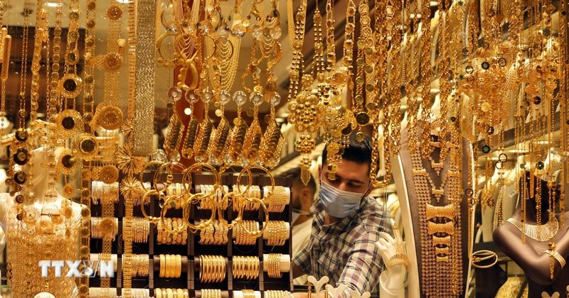
Giá vàng giảm sâu hơn 3% trước những lo ngại về lãi suất 🔗 MOI
Facebook Twitter Lưu bài viết Bản in Copy link Giá vàng thế giới giảm hơn 3% trong phiên 10/6, khi những lo ngại về khả năng leo thang căng thẳng tại Iran làm gia tăng những dự đoán về việc tăng lãi s
Tổng thống Mỹ Trump bất ngờ thay đổi thái độ với Iran 🔗 MOI
Tổng thống Mỹ Donald Trump. (Ảnh: Reuters) Chưa đầy hai ngày trước, Tổng thống Mỹ Trump vẫn tuyên bố trước các phóng viên rằng một thỏa thuận có thể chỉ còn cách “hai hoặc ba ngày nữa”. Ông tỏ ra miễn
Hành trình thị trưởng Mỹ trở thành đặc vụ cho Trung Quốc 🔗 MOI
Khi tuyên thệ nhậm chức Thị trưởng Arcadia, thành phố nhỏ phía nam bang California hồi tháng hai, Eileen Wang đã dùng những ngôn từ đầy tự hào và xúc động để nói về hành trình từ một cô gái sống tại "

Phát huy vai trò chủ đạo của kinh tế nhà nước trong kỷ nguyên mới 🔗 MOI
Kinh tế Thay vì dựa trên quy mô sở hữu, bài viết phân tích vai trò của kinh tế nhà nước trong nền kinh tế Việt Nam theo cách tiếp cận chức năng: ổn định kinh tế vĩ mô, định hướng phát triển và thiết l
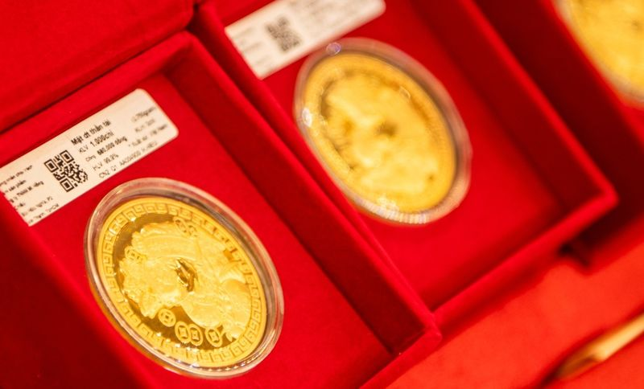
Giá vàng hôm nay 11/6/2026: Giảm không ngừng, vàng SJC lại rơi xuống đáy 8 tháng 🔗 MOI
Giá vàng thế giới hôm nay 11/6/2026 Lúc 20h30 ngày 10/6 (giờ Việt Nam), giá vàng giao ngay trên thị trường quốc tế ở mức 4.170 USD/ounce. Vàng giao tháng 8/2026 trên sàn Comex New York ghi nhận ở mức
Vì sao giá dầu vẫn neo cao dù OPEC+ liên tiếp tăng sản lượng? 🔗 MOI
Facebook Twitter Lưu bài viết Bản in Copy link Tổ chức các Nước Xuất khẩu Dầu mỏ (OPEC) và các đồng minh, còn gọi là OPEC+, vừa quyết định nâng sản lượng thêm 188.000 thùng/ngày từ tháng 7/2026, đánh
Dự báo của Mỹ về dòng chảy dầu qua eo biển Hormuz 🔗 MOI
Trước đó một ngày, theo trang The Hill, Tổng thống Mỹ Donald Trump cũng đưa ra nhận định tương tự khi cho biết "rất nhiều dầu đang được vận chuyển qua eo biển Hormuz". Tuyến đường huyết mạch của ngành

'Chỉ sạc ở trạm đắt nhất, dùng điều hòa, đi xe điện vẫn rẻ hơn xe xăng' 🔗 MOI
Suvrat Kothari chọn thuê xe điện để đi du lịch vì giá thuê rẻ hơn xe xăng trong cùng một thời điểm - Ảnh: InsideEVs Phóng viên Suvrat Kothari của InsideEVs đã trải nghiệm một chuyến đi đường dài bằng
Bất động sản khu vực châu Á - Thái Bình Dương trước làn sóng AI 🔗 MOI
TIN MỚI Trí tuệ nhân tạo (AI) được dự báo sẽ thúc đẩy tăng trưởng kinh tế và làm gia tăng nhu cầu đối với bất động sản thương mại trên khắp khu vực châu Á - Thái Bình Dương (APAC). Báo cáo AI Impact:
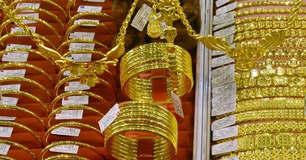
Giá vàng hôm nay 11-6: Vàng thế giới giảm 160 USD 🔗 MOI
Giá vàng hôm nay "bốc hơi" rất mạnh Khoảng 6 giờ ngày 11-6 (giờ Việt Nam), giá vàng hôm nay của thế giới dao động ở mức 4.064 USD/ounce, giảm mạnh 160 USD so với mức giá cao nhất của phiên đêm qua (4.
Trung Quốc xây dựng 'mỏ dữ liệu' cho cuộc đua AI 🔗 MOI
Cục Quản lý dữ liệu quốc gia Trung Quốc mới đây công bố dự thảo kế hoạch toàn quốc nhằm mở rộng nguồn cung dữ liệu đào tạo AI. Động thái này cho thấy Bắc Kinh muốn củng cố vị thế trong cuộc cạnh tranh
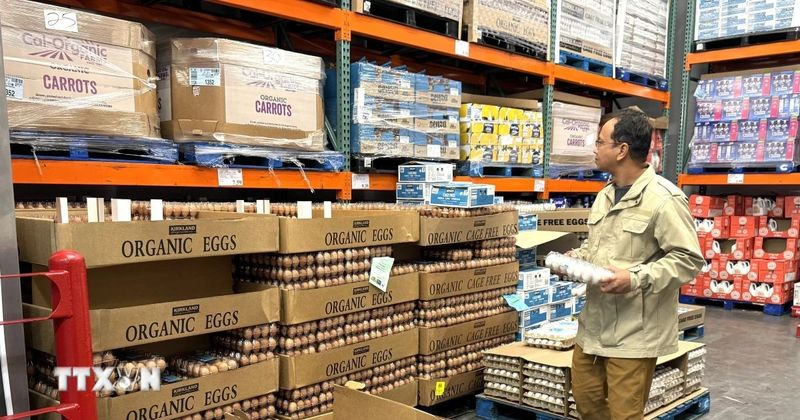
Lạm phát tiêu dùng tại Mỹ tăng mạnh nhất trong ba năm 🔗 MOI
Facebook Twitter Lưu bài viết Bản in Copy link Lạm phát tiêu dùng tại Mỹ trong tháng 5/2026 tăng mạnh nhất trong ba năm qua, khi xung đột tại Trung Đông đẩy giá xăng và các sản phẩm năng lượng khác đi
Đài Loan phóng thử tên lửa Mỹ về phía bờ biển Trung Quốc 🔗 MOI
Đài Loan thực hiện vụ phóng thử nghiệm bắn đạn thật từ hệ thống HIMARS vào tháng 5-2025 tại Bình Đông - Ảnh: REUTERS Ngày 10-6, Đài Loan đã sử dụng hệ thống pháo phản lực cơ động cao (HIMARS) để phóng

Đổi mới mô hình tăng trưởng gắn với tái cơ cấu nền kinh tế trong giai đoạn mới 🔗 MOI
Pháp luật Triển khai Nghị quyết số 07-NQ/TW ngày 18/11/2016 của Bộ Chính trị về chủ trương, giải pháp cơ cấu lại ngân sách nhà nước, quản lý nợ công, việc cơ cấu lại ngân sách nhà nước, quản lý nợ côn

Tiếp nhận phản ánh kiến nghị của doanh nghiệp 🔗 MOI
HỌ VÀ TÊN * EMAIL * SỐ ĐIỆN THOẠI * ĐỊA CHỈ * TIÊU ĐỀ * FILES ĐÍNH KÈM NỘI DUNG * RadEditor - HTML WYSIWYG Editor. MS Word-like content editing experience thanks to a rich set of formatting tools, dro

Khu Công nghiệp, Khu Kinh tế 🔗 MOI
Dữ liệu và các nền tảng số đang được kỳ vọng trở thành hạ tầng thiết yếu giúp giảm chi phí giao dịch, nâng cao năng suất và tạo bứt phá cho mục tiêu tăng trưởng kinh tế hai con số của các địa phương.
Chứng khoán Mỹ giảm mạnh do lạm phát tăng và áp lực bán cổ phiếu công nghệ 🔗 MOI
Facebook Twitter Lưu bài viết Bản in Copy link Thị trường chứng khoán Mỹ đồng loạt đi xuống trong phiên 10/6 do lo ngại về lạm phát gia tăng, căng thẳng địa chính trị tại Trung Đông và hoạt động chốt
Phim Việt “khát” người hợp vai 🔗 MOI
Cơ hội cho người mới Hơn 1.200 hồ sơ đã được gửi về tham gia casting dự án phim điện ảnh Đất đỏ (đạo diễn Lê Văn Kiệt). Nhiều gương mặt quen thuộc như: Lâm Thanh Mỹ, Đình Khang, Hạo Khang, Huỳnh Thanh
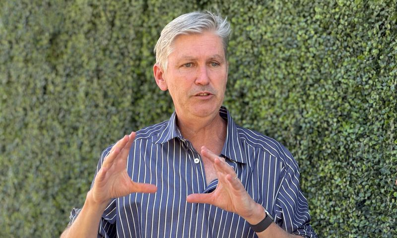
Nhà sáng lập NotebookLM: 'AI để cùng động não, không phải để viết thay' 🔗 MOI
Steven Johnson là nhà văn, nhà nghiên cứu công nghệ kỳ cựu và tác giả của nhiều cuốn sách bán chạy về đổi mới sáng tạo. Ông hiện là nhà đồng sáng lập kiêm Giám đốc quản lý sản phẩm của dự án NotebookL
Chiến sự Trung Đông ngày 104: Iran tuyên bố đóng eo biển Hormuz; Ông Trump, ông Hegseth ra loạt tuyên bố rắn 🔗 MOI
(PLO)- Ông Trump, ông Hegseth ra loạt tuyên bố rắn với Iran; Tehran tuyên bố đóng eo biển Hormuz; Có tin phái đoàn Qatar vẫn ở Iran giữa lúc Mỹ mở đợt không kích mới. Tình hình Trung Đông tiếp tục xuấ
Ấn Độ triệu tập Đại biện Mỹ sau vụ tấn công tàu chở dầu ngoài khơi Oman 🔗 MOI
(PLO)- Bộ Ngoại giao Ấn Độ đã lên án vụ việc Mỹ tấn công tàu chở dầu treo cờ Palau ở ngoài khơi Oman khiến 3 thủy thủ Ấn Độ mất tích. Ngày 10-6, Bộ Ngoại giao Ấn Độ đã xác nhận với kênh Al Jazeera rằn
Mỹ tiếp tục không kích Iran sau cảnh báo của ông Trump, eo biển Hormuz đóng cửa 🔗 MOI
Theo CNN,Bộ Tư lệnh Trung tâm Mỹ (CENTCOM) tối 10/6 đã thông báo về việc tiến hành các cuộc không kích mới nhắm vào Iran , nhấn mạnh đây là biện pháp đáp trả "những hành động vô lý của Tehran". "Chúng
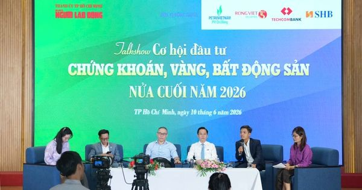
Kiên nhẫn với vàng, chứng khoán nửa cuối năm 🔗 MOI
Dù chưa hết 6 tháng đầu năm nhưng thị trường tài chính trong nước cũng như thế giới đã trải qua những đợt biến động rất mạnh khiến giới đầu tư nhiều phen chao đảo. Chứng khoán tăng mạnh rồi giảm sâu.
Mỹ không kích Iran, ngừng bắn và đàm phán có đổ vỡ? 🔗 MOI
(PLO)- Việc Mỹ và Iran có màn "ăn miếng trả miếng" sau vụ trực thăng Apache rơi tại eo biển Hormuz làm dấy lên lo ngại căng thẳng leo thang và đe dọa tiến trình đàm phán. Ngày 9-6, Mỹ không kích trả đ
Tại sao gửi tiền ngân hàng trả lãi suất cao vót 8%/năm dù kỳ hạn chỉ 1 tháng? 🔗 MOI
Vì sao lãi suất chứng chỉ tiền gửi cao hơn lãi suất thường? Theo quy định của Ngân hàng Nhà nước (NHNN), lãi suất tối đa đối với tiền gửi bằng đồng Việt Nam không kỳ hạn và có kỳ hạn dưới 1 tháng là 0
Tổng thống Trump giữa 'vũng lầy' cuộc chiến Iran 🔗 MOI
Mỹ và Iran lại rơi vào vòng xoáy lửa đạn mới khi hai bên "ăn miếng trả miếng" bằng những vụ tập kích nhằm vào nhau. Lửa đạn lan rộng Kể từ khi lệnh ngừng bắn giữa Mỹ và Iran được thực thi ngày 8.4, đâ
Giá dầu neo cao, Petrolimex có thể từng bước hoàn nhập dự phòng hàng tồn kho 🔗 MOI
PLX: Giá hiện tại Thay đổi Xem hồ sơ doanh nghiệp TIN MỚI Theo báo cáo phân tích mới công bố của Chứng khoán Vietcombank (VCBS), Tập đoàn Xăng dầu Việt Nam (Petrolimex – mã PLX) đang có nhiều động lực
Kia Sorento hybrid ở Việt Nam giá từ 1,349 tỉ, gây ngạc nhiên khi rẻ hơn bản máy dầu 🔗 MOI
Kia Sorento hybrid có giá thấp hơn bản máy dầu - Ảnh: Kia Kia Sorento có giá từ 1,349 tỉ đồng Ngày 10-6, Kia Việt Nam công bố giá bán chính thức cho Kia Sorento HEV, đánh dấu sự bổ sung phiên bản hybr

Khơi thông các động lực tăng trưởng kinh tế Việt Nam 🔗 MOI
Pháp luật Nhờ sự phối hợp đồng bộ của chính sách tài khóa và tiền tệ trong việc thúc đẩy cầu trong nước, kinh tế Việt Nam năm 2025 phục hồi mạnh, với tăng trưởng vượt mục tiêu đề ra. Về ổn định kinh t
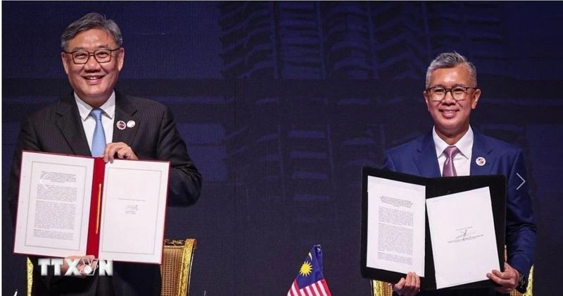
Thái Lan thông qua nâng cấp Hiệp định Thương mại Tự do ASEAN-Trung Quốc 🔗 MOI
Facebook Twitter Lưu bài viết Bản in Copy link Nội các Thái Lan ngày 10/6 đã thông qua việc trình Quốc hội xem xét phê chuẩn Nghị định thư nâng cấp Hiệp định Thương mại Tự do ASEAN-Trung Quốc (ACFTA)
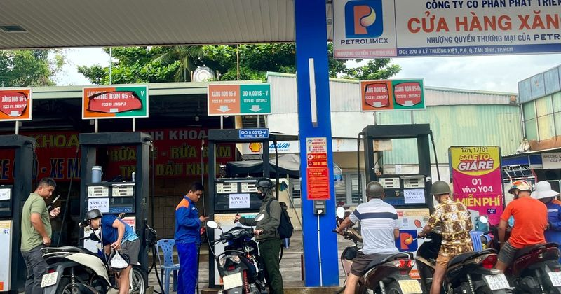
Cả nước sử dụng xăng E10: Người trồng ngô, sắn, mía liệu có hưởng lợi? 🔗 MOI
Lộ trình triển khai xăng sinh học E10 trên toàn quốc từ ngày 1-6-2026 bên cạnh việc góp phần giảm phụ thuộc xăng khoáng và bảo vệ môi trường, còn được kỳ vọng giúp ngành nông nghiệp Việt Nam, đặc biệt
Toan tính của hai đảng Dân chủ - Cộng hòa sau vòng bầu cử sơ bộ 🔗 MOI
Những ẩn số khó lường Ngày 9.6 (giờ Mỹ), nhiều bang nước Mỹ đã công bố người chiến thắng trong các cuộc bầu cử sơ bộ cho những vị trí quan trọng. Tâm điểm chú ý được dồn vào kết quả ứng viên thống đốc

Kinh tế TP HCM 5 tháng: Thu ngân sách vượt 400.000 tỷ đồng 🔗 MOI
TP HCM ghi nhận 24.784 doanh nghiệp thành lập mới trong 5 tháng đầu năm 2026, tăng 29,1% so với cùng kỳ, trong khi tổng thu ngân sách đạt gần 402.000 tỷ đồng. Ảnh minh họa: Minh Phong/Mekong ASEAN The
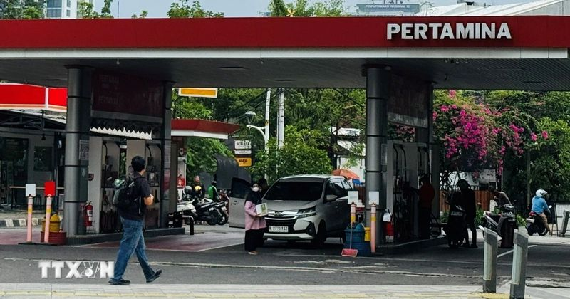
Nhiên liệu sinh học: Lời giải mới cho bài toán an ninh năng lượng 🔗 MOI
Facebook Twitter Lưu bài viết Bản in Copy link Trước những biến động kéo dài của thị trường năng lượng toàn cầu và nguy cơ gián đoạn nguồn cung dầu mỏ từ Trung Đông, nhiều quốc gia châu Á đang đẩy mạn
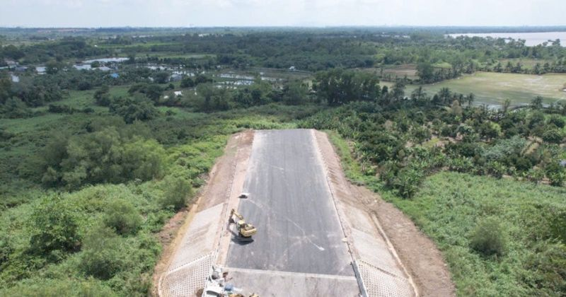
Thành phố Đồng Nai sắp khởi công nhiều dự án giao thông quan trọng 🔗 MOI
(PLO)- Theo kế hoạch trong tháng 6 này, Đồng Nai sẽ khởi công xây dựng hàng loạt dự án hạ tầng giao thông trọng điểm. Sau thời gian triển khai thực hiện các thủ tục đầu tư, giải phóng mặt bằng, dự kiế
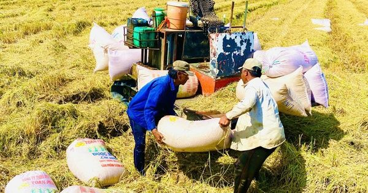
Thời cơ nâng giá trị gạo Việt 🔗 MOI
Trong bối cảnh nguồn cung gạo toàn cầu được dự báo giảm, nhiều chuyên gia cho rằng đây có thể là cơ hội để ngành gạo Việt Nam cải thiện giá xuất khẩu trong những tháng cuối năm. Tuy nhiên, để tận dụng
Messi tuyên bố đanh thép, thách thức mọi đối thủ phế truất ngai vàng của Argentina 🔗 MOI
Lionel Messi vừa đánh dấu sự trở lại đầy ấn tượng trong màu áo tuyển Argentina bằng pha lập công ở chiến thắng 3-0 trước Iceland. Đây là trận giao hữu thử lửa cuối cùng, đóng vai trò là bước chạy đà c
Cần ‘đại bàng’ mang vốn, công nghệ, chuỗi cung ứng tới Cần Thơ 🔗 MOI
Tại Hội thảo "Phát triển dịch vụ logistics TP. Cần Thơ với vai trò trung tâm vùng ĐBSCL", diễn ra chiều 10/6, ông Lê Thanh Hòa - Quyền Viện trưởng Viện Kinh tế - Xã hội TP. Cần Thơ - cho biết, các chi
Điểm nóng xung đột ngày 11-6: Mỹ và Iran toan tính gì khi liên tục "ăn miếng trả miếng"? 🔗 MOI
Chuyên gia Elijah Magnier cho biết Mỹ muốn khẳng định “khả năng răn đe” thông qua các đòn tấn công mới nhất, bảo vệ lực lượng thường trực trong khu vực và khôi phục tự do hàng hải. Mặc khác, Iran muốn
Xe điện cũ mua 500 ngàn đồng được thiếu niên độ chế lại chạy 100km/h 🔗 MOI
Lực lượng công an phát hiện thiếu niên tự chế xe điện tại nhà riêng - Ảnh: SỸ ĐỨC Ngày 10-6, Công an phường Tân Lập, tỉnh Đắk Lắk cho biết đang phối hợp Phòng Cảnh sát giao thông Công an tỉnh tiếp tục
Cần làm gì để ươm mầm, phát triển tài năng điện ảnh trẻ? 🔗 MOI
Các nghệ sĩ tham dự buổi sinh hoạt chuyên đề ngày 10-6 - Ảnh: LAN HƯƠNG Ngày 10-6, tại ấp đảo Thiềng Liềng (TP.HCM) diễn ra buổi sinh hoạt chuyên đề Phát triển điện ảnh TP.HCM gắn với phát huy các giá
Trung Đông tối 10-6: Ông Trump tuyên bố sẽ tấn công Iran 'rất mạnh', gồm khả năng không kích 🔗 MOI
Tổng thống Donald Trump cảnh báo Iran sẽ phải 'trả giá' - Ảnh: AFP Phát biểu tại Phòng Bầu Dục ngày 10-6, Tổng thống Trump khẳng định sẽ nối lại các cuộc tấn công nhằm vào Iran và sẽ "tấn công rất mạn

Kiến tạo không gian phát triển mới cho kinh tế tập thể 🔗 MOI
Pháp luật Trong giai đoạn 2021-2025, dựa vào mục tiêu phát triển, điều kiện ngân sách và nhu cầu hỗ trợ, năng lực của các hợp tác xã, Thủ tướng Chính phủ đã ban hành Chương trình hỗ trợ phát triển kin

Góc chuyên gia & nhà quản lý 🔗 MOI
Dữ liệu và các nền tảng số đang được kỳ vọng trở thành hạ tầng thiết yếu giúp giảm chi phí giao dịch, nâng cao năng suất và tạo bứt phá cho mục tiêu tăng trưởng kinh tế hai con số của các địa phương.

Nhìn lại 1 năm thực thi Nghị quyết 68-NQ/TW 🔗 MOI
Doanh nghiệp Sau 1 năm triển khai Nghị quyết số 68-NQ/TW, nhiều doanh nghiệp công nghệ Việt ghi nhận những chuyển biến tích cực từ môi trường kinh doanh, cơ chế hỗ trợ và tư duy điều hành theo hướng k

Hoạt động của Lãnh đạo Bộ Tài chính 🔗 MOI
Dữ liệu và các nền tảng số đang được kỳ vọng trở thành hạ tầng thiết yếu giúp giảm chi phí giao dịch, nâng cao năng suất và tạo bứt phá cho mục tiêu tăng trưởng kinh tế hai con số của các địa phương.
Tạp chí Kinh tế Sài Gòn 🔗 MOI
Kinh tế Sài Gòn giữ bản quyền nội dung của trang web thesaigontimes.vn. Không sử dụng lại nội dung trên trang này dưới mọi hình thức, trừ khi được Kinh tế Sài Gòn đồng ý bằng văn bản. Trang ngoài sẽ đ
Tạp chí Kinh tế Sài Gòn 🔗 MOI
Kinh tế Sài Gòn giữ bản quyền nội dung của trang web thesaigontimes.vn. Không sử dụng lại nội dung trên trang này dưới mọi hình thức, trừ khi được Kinh tế Sài Gòn đồng ý bằng văn bản. Trang ngoài sẽ đ
Tạp chí Kinh tế Sài Gòn 🔗 MOI
Kinh tế Sài Gòn giữ bản quyền nội dung của trang web thesaigontimes.vn. Không sử dụng lại nội dung trên trang này dưới mọi hình thức, trừ khi được Kinh tế Sài Gòn đồng ý bằng văn bản. Trang ngoài sẽ đ
Tạp chí Kinh tế Sài Gòn 🔗 MOI
Kinh tế Sài Gòn giữ bản quyền nội dung của trang web thesaigontimes.vn. Không sử dụng lại nội dung trên trang này dưới mọi hình thức, trừ khi được Kinh tế Sài Gòn đồng ý bằng văn bản. Trang ngoài sẽ đ
Chi tiêu cho vũ khí hạt nhân toàn cầu lập kỷ lục mới 🔗 MOI
Báo cáo nêu rõ, chín quốc gia sở hữu vũ khí hạt nhân (gồm Mỹ, Nga, Trung Quốc, Pháp, Anh, Ấn Độ, Pakistan, Triều Tiên và Israel) đã chi khoảng 119 tỷ USD, tăng 19% so với năm 2024. Trong đó, chi nhiều
Mỹ, Iran gia tăng hành động quân sự 🔗 MOI
Trên mạng xã hội X, Bộ Chỉ huy Trung tâm Mỹ (CENTCOM) xác nhận, các lực lượng Mỹ đã tiến hành các cuộc tấn công tự vệ nhằm vào Iran theo lệnh của Tổng thống Mỹ Donald Trump; cho biết đây là “phản ứng
Một Gen Z giàu hơn cả ông Trương Gia Bình, Bùi Thành Nhơn trên sàn chứng khoán 🔗 MOI
Một Gen Z giàu hơn cả ông Trương Gia Bình, Bùi Thành Nhơn trên sàn chứng khoán Theo An Thái | 11/06/2026 06:54 AM | Kinh doanh Theo dõi Cafebiz.vn trên Dù tuổi đời còn rất trẻ, gương mặt Gen Z đã nắm
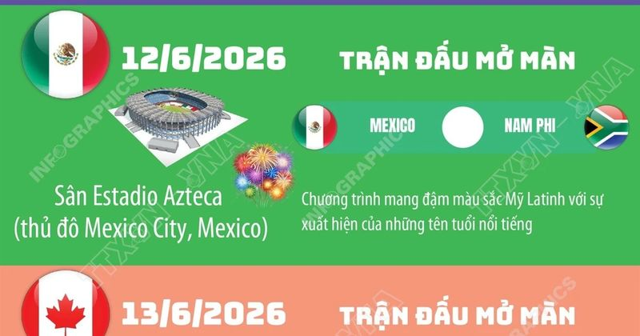
World Cup 2026 mở màn khai mạc chưa từng có trong lịch sử 🔗 MOI
Facebook Twitter Lưu bài viết Bản in Copy link World Cup 2026 khai mạc ngày 11/6 và kéo dài đến ngày 19/7/2026. World Cup 2026 mở màn theo cách chưa từng có trong lịch sử khi Liên đoàn Bóng đá thế giớ
Mỹ tiếp tục không kích Iran, loạt tiếng nổ vang khắp nơi 🔗 MOI
(PLO)- Mỹ tấn công nhiều mục tiêu tại Iran ngày thứ hai liên tiếp, trong khi truyền thông Iran ghi nhận các vụ nổ tại nhiều khu vực trên cả nước. Ngày 10-6 (giờ Mỹ), Bộ Tư lệnh Trung tâm Mỹ (CENTCOM)
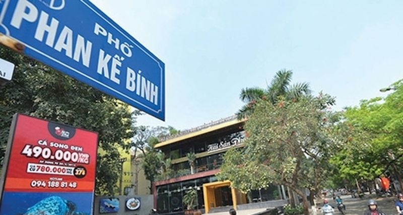
Hà Nội sắp thu hồi gần 5ha ‘đất vàng’ ở phường Giảng Võ mở rộng loạt tuyến đường 🔗 MOI
Theo danh mục các công trình, dự án thu hồi đất giai đoạn 2026-2030 trình HĐND TP Hà Nội, thành phố dự kiến thu hồi gần 5ha đất trên địa bàn phường Giảng Võ để triển khai 10 dự án đầu tư công. Trong s
Tăng tốc điện mặt trời mái nhà 🔗 MOI
Nhu cầu tăng đều, nguy cơ thiếu điện cao Hóa đơn tiền điện tháng 5 của nhiều hộ gia đình ghi nhận mức tăng vọt, đúng với tình trạng thời tiết nắng nóng gay gắt kéo dài. Thông tin đến Báo Thanh Niên ,
Gia Lai vừa đề nghị với Bộ Xây dựng về sân bay Phù Cát? 🔗 MOI
Ngày 10/6, UBND tỉnh Gia Lai cho biết đã đề nghị gửi Bộ Xây dựng xem xét, giải quyết các nội dung liên quan đến việc tiếp nhận, bàn giao, quản lý và khai thác các hạng mục công trình tại cảng hàng khô

Chuyên đề Agribank 🔗 MOI
Trước áp lực thực thi Nghị định số 70/2025/NĐ-CP về hóa đơn điện tử và quản lý thuế, Agribank tổ chức hội nghị tập huấn toàn quốc, thống nhất quy trình hỗ trợ và giới thiệu gói giải pháp số dành riêng

TỔNG QUAN TỔNG QUAN KINH TẾ 🔗 MOI
Kinh tế Hoạt động điều hành chính sách tài khóa năm 2025 diễn ra trong bối cảnh tình hình kinh tế trong nước và quốc tế tiếp tục diễn biến phức tạp, căng thẳng thương mại toàn cầu gia tăng, đặc biệt l

Tiếp nhận phản ánh kiến nghị của công dân 🔗 MOI
HỌ VÀ TÊN * EMAIL * SỐ ĐIỆN THOẠI * ĐỊA CHỈ * TIÊU ĐỀ * FILES ĐÍNH KÈM NỘI DUNG * RadEditor - HTML WYSIWYG Editor. MS Word-like content editing experience thanks to a rich set of formatting tools, dro
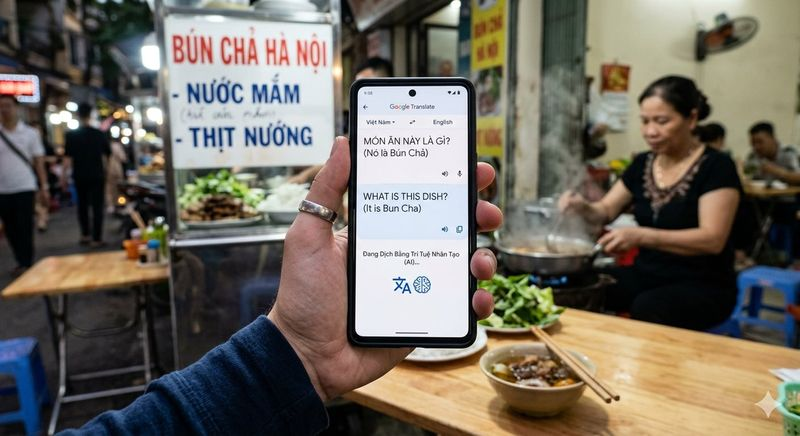
Từ ChatGPT đến Gemini: Công nghệ thay đổi cách sinh viên học ngọai ngữ năm 2026 🔗 MOI
Từ ChatGPT đến Gemini: Công nghệ đang "viết lại" cách sinh viên học ngoại ngữ Mai Mai | 11/06/2026 07:16 AM | Công nghệ Theo dõi Cafebiz.vn trên Liệu AI có đang cướp cơ hội việc làm của các sinh viên
Phân khúc nào đang có nhiều mẫu xe hybrid nhất tại thị trường Việt Nam? 🔗 MOI
Thị trường ô tô Việt Nam năm 2026 đang chứng kiến tốc độ "xanh hóa" ngày càng rõ rệt. Ngoài sự phát triển vượt trội của xe điện, dòng xe lai hybrid cũng tăng tốc và trở thành một cấu phần quan trọng t
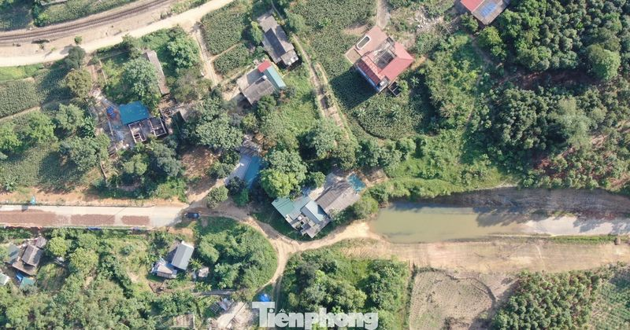
Lào Cai: Dự án cầu vượt trăm tỷ ‘lụt’ tiến độ do vướng ngôi nhà giữa đường 🔗 MOI
Dự án cầu vượt đường sắt khu vực An Bình, xã Đông Cuông có tổng mức đầu tư hơn 100 tỷ đồng, chiều dài 2,3km, do Ban Quản lý dự án đầu tư xây dựng số 1 tỉnh Lào Cai làm chủ đầu tư, nhà thầu là liên dan
TP.HCM tốc lực mở đường kết nối liên vùng 🔗 MOI
Dồn dập mở đường kết nối tới TP.Đồng Nai Ban Quản lý dự án (QLDA) Mỹ Thuận vừa trình Bộ Xây dựng hồ sơ Báo cáo nghiên cứu khả thi điều chỉnh Dự án thành phần 1A của công trình đầu tư xây dựng đoạn Tân
Lào và Nhật Bản tăng cường hợp tác song phương trong nhiều lĩnh vực 🔗 MOI
Facebook Twitter Lưu bài viết Bản in Copy link Nhân dịp tham dự Hội nghị quốc tế về Tương lai châu Á lần thứ 31 tại Nhật Bản, ngày 10/6, Thủ tướng Lào Sonexay Siphandone đã có cuộc hội đàm với Thủ tướ
Tuyên bố 'UAV Iran bắn rơi trực thăng Apache Mỹ' gây hoài nghi 🔗 MOI
Tổng thống Donald Trump hôm 9/6 cáo buộc Iran bắn hạ trực thăng vũ trang Apache đang làm nhiệm vụ tuần tra trên eo biển Hormuz. Hai quan chức Mỹ tiết lộ với CNN rằng phi cơ bị bắn rơi ngoài khơi Oman
Lễ khai mạc World Cup 2026: 3 sắc màu đậm chất Bắc Mỹ 🔗 MOI
Chủ tịch FIFA Gianni Infantino đã phát biểu trước truyền thông rằng: "Chuỗi lễ khai mạc này đại diện cho quy mô phi thường và tầm vóc lịch sử của những gì World Cup 2026 hướng tới". Theo kế hoạch của
Lạm phát Mỹ cao nhất 3 năm 🔗 MOI
Ngày 10/6, Cục Thống kê lao động Mỹ công bố chỉ số giá tiêu dùng (CPI) của Mỹ trong tháng 5 tăng 4,2% so với năm ngoái. Dù khớp với dự báo, đây cũng là lần đầu tiên số liệu này vượt 4% kể từ tháng 4/2
Người Mỹ không còn được tăng lương nhiều khi nhảy việc 🔗 MOI
Trong giai đoạn bùng nổ tuyển dụng thời đại dịch, có tên "Great Resignation" (Đại nghỉ việc), chuyển việc thường đồng nghĩa với lương tăng đáng kể. Tuy nhiên hiện nay, lợi ích tài chính từ việc này đã
Sinh viên Đại học Đông Á 'chinh phục' doanh nghiệp từ sớm 🔗 MOI
Lễ hội văn hóa Việt – Nhật và Ngày hội việc làm Nhật Bản tại Đại học Đông Á Năng lực thấu hiểu con người trong kỷ nguyên AI Tại Đại học Đông Á, khối ngành Ngôn ngữ - Giáo dục - Nhân văn giúp sinh viên
Hàn Quốc nới lỏng quy định về vành đai xanh để đẩy nhanh nguồn cung nhà ở 🔗 MOI
Theo quy định mới, các dự án nhà ở công cộng cần giải tỏa vành đai xanh sẽ không bị tính vào tổng hạn mức giải tỏa sau khi được nội các thông qua - Ảnh: Koreatimes.co.kr Động thái nhằm đẩy nhanh tiến

Hơn 142.000 doanh nghiệp gia nhập và tái gia nhập thị trường sau 5 tháng 🔗 MOI
Trong 5 tháng đầu năm nay, số doanh nghiệp thành lập mới và quay trở lại hoạt động đạt hơn 142.600, tăng 27,6% so với cùng kỳ năm trước. Tuy nhiên, áp lực thanh lọc doanh nghiệp cũng tăng mạnh với 129

Ấn phẩm 🔗 MOI
Tạp chí Kinh tế - Tài chính Online. Cơ quan chủ quản: Bộ Tài chính Giấy phép xuất bản số: 107/GP-BVHTTDL ngày 26/8/2025. Tạp chí Kinh tế - Tài chính Online: e-ISSN 3093-3498.

Chính phủ với doanh nghiệp 🔗 MOI
20/03/2026 (Chinhphu.vn) - Chính phủ ban hành Nghị quyết số 11/2026/NQ-CP về chi phí tiền lương Ngân hàng thương mại TNHH một thành viên Xây dựng Việt Nam, Ngân... 04/03/2026 (Chinhphu.vn) - Chính phủ
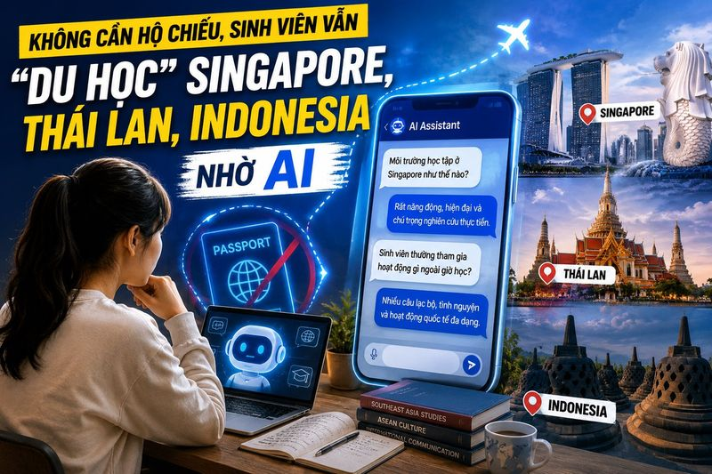
AI biến giảng đường thành cửa khẩu số cho sinh viên trải nghiệm du học ảo 🔗 MOI
AI biến giảng đường thành “cửa khẩu số”, sinh viên trải nghiệm du học không cần xuất ngoại Minh Ngọc | 11/06/2026 07:19 AM | Công nghệ Theo dõi Cafebiz.vn trên Từ những cuộc hội thoại giả lập đến các
Ai sai cũng phải chịu trách nhiệm! 🔗 MOI
- Coi tin tức thấy mấy vụ ô tô, xe máy chạy ẩu, tông trúng người đi bộ sang đường mà phát sợ. Ra đường lơ là một chút là nguy hiểm tới tính mạng liền. - Nhưng nói cũng phải hai chiều.
Mỗi học sinh một giáo trình riêng: AI đang âm thầm thay đổi cách trẻ em Việt học Toán 🔗 MOI
Mỗi học sinh một giáo trình riêng: AI đang âm thầm thay đổi cách trẻ em Việt học Toán Băng Băng | 11/06/2026 07:13 AM | Công nghệ Theo dõi Cafebiz.vn trên Liệu ngành giáo dục sẽ thay đổi ra sao trước
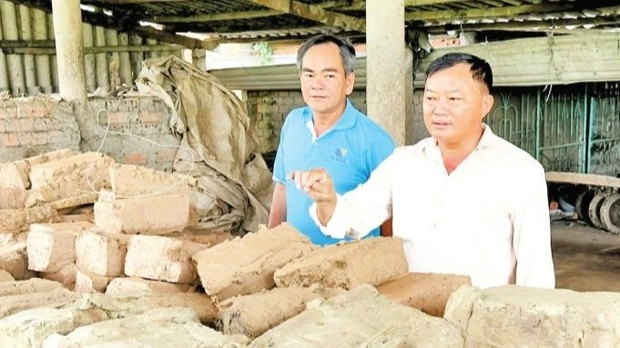
Thiếu nguyên liệu, nhiều lò gốm ở Vĩnh Long gián đoạn sản xuất 🔗 MOI
Ngành sản xuất gạch gốm mỹ nghệ xuất khẩu của tỉnh Vĩnh Long nhiều năm qua luôn duy trì quy mô ổn định với 50 doanh nghiệp, giải quyết việc làm cho hơn 2.000 lao động trực tiếp. Mỗi năm mang về doanh
Đề xuất xây căn hộ nhỏ 15 m2 phục vụ nhu cầu của người độc thân hoặc hộ gia đình ít người 🔗 MOI
TIN MỚI nhà ở Tại Hội nghị quán triệt, triển khai và xúc tiến đầu tư dự án nhà ở cho thuê giá phù hợp với khả năng chi trả của người thu nhập trung bình, người thu nhập thấp đô thị diễn ra ngày 9/6, ô
Bỗng dưng các “bé ba” phim giờ vàng đều tên Trang, liệu có ẩn ý gì phía sau? 🔗 MOI
Bóng Ma Hạnh Phúc là phim giờ vàng gây ồn ào nhất thời gian qua, và nhân vật khiến khán giả bức xúc nhất chính là “bé ba” Như Trang. Là cô gái trẻ đang bơ vơ, Như Trang được Thanh Mai dang tay bao bọc
12 ‘quái kiệt’ đua Quả bóng vàng World Cup 2026 🔗 MOI
(PLO)- Chỉ còn 2 ngày trước khi World Cup 2026 khởi tranh tại Mỹ, Canada và Mexico, cuộc đua giành danh hiệu Cầu thủ xuất sắc nhất giải đấu đang là chủ đề nóng bỏng với những tên tuổi lớn của bóng đá
Thí sinh cả nước tham dự kỳ thi tốt nghiệp trung học phổ thông 🔗 MOI
Theo dữ liệu đăng ký dự thi của Bộ Giáo dục và Đào tạo, kỳ thi năm nay, ngoài hai môn thi bắt buộc là Ngữ văn, Toán, thí sinh lựa chọn môn thi tự chọn ngày càng gắn với định hướng nghề nghiệp và nhu c
Chính phủ Italy thông qua hai dự luật quản lý toàn diện trí tuệ nhân tạo 🔗 MOI
Facebook Twitter Lưu bài viết Bản in Copy link Ngày 10/6, chính phủ Italy đã thông qua hai dự thảo luật nhằm đưa vào áp dụng trong nước Quy định Trí tuệ nhân tạo của Liên minh châu Âu (EU AI Act), đán
Phá đường dây buôn lậu vàng thỏi trị giá gần 1.000 tỉ đồng 🔗 MOI
Ngày 10-6, thông tin từ Công an tỉnh Thanh Hóa cho biết, Cơ quan Cảnh sát điều tra Công an tỉnh này đã ra quyết định khởi tố bị can, thi hành lệnh bắt tạm giam đối với 6 đối tượng về hành vi buôn lậu

🔗 MOI
Đề thi thử tốt nghiệp THPT môn Toán năm 2026 với thời gian làm bài 90 phút do Tuyensinh247 xây dựng như sau: Dưới đây là đáp án: Kỳ thi tốt nghiệp THPT năm 2026 diễn ra ngày 10-12/6, trong đó ngày 11
Video UAV Ukraine bắn nổ pháo tự hành Msta-S và nhiều khí tài Nga ở Kherson 🔗 MOI
Theo Defense Express, Bộ Quốc phòng Ukraine ngày 10/6 đã đăng tải đoạn video ghi lại cảnh quân đội nước này triển khai UAV để tập kích hàng loạt mục tiêu Nga ở mặt trận Kherson. "Đơn vị UAV của Lữ đoà
Loạt động thái mới của châu Âu đối với Ukraine 🔗 MOI
Thỏa thuận với Latvia tập trung vào việc sản xuất UAV, chia sẻ công nghệ và hợp tác quốc phòng, trong khi ký tuyên bố với Estonia chính thức hóa sự hợp tác trong các lĩnh vực phát triển công nghiệp qu

Công thức kẻ lừa đảo dùng để dụ các nhà đầu tư 'sập bẫy' 🔗 MOI
VKSND TP Hà Nội vừa hoàn tất cáo trạng truy tố bị can Lê Trung Hiếu (SN 1997, ở phường Vĩnh Tuy, Hà Nội) về tội Lừa đảo chiếm đoạt tài sản. Trước đó, vào năm 2020, Lê Trung Hiếu là nhân viên bán hàng
"Bài toán" Iran và những lựa chọn khó khăn của Tổng thống Donald Trump 🔗 MOI
Mỗi đời tổng thống Mỹ đều tin rằng có thể kiểm soát các cuộc khủng hoảng tại Trung Đông, nhưng thực tế thường phức tạp hơn dự tính. Tổng thống Donald Trump hiện đối mặt bài toán tương tự khi chiến lượ
HLV Pochettino: 'Mỹ có thể vô địch World Cup' 🔗 MOI
"Mỹ đang cạnh tranh với những đội tuyển như Bỉ hay Bồ Đào Nha", Pochettino nói. "Tôi nghĩ chắc chắn Bỉ và Bồ Đào Nha đều có một vài cầu thủ nằm trong Top 100 thế giới. Còn chúng tôi thì không".

Trẻ sinh ra di truyền giang mai từ mẹ có điều trị được không? 🔗 MOI

Kiểm soát lạm phát trước những "biến số" cuối năm 🔗 MOI
Tài chính Tại Nghị quyết số 86/NQ-CP ngày 4/11/2025 về triển khai nhiệm vụ trọng tâm những tháng cuối năm 2025, Chính phủ tiếp tục yêu cầu về kiểm soát lạm phát, giữ vững ổn định kinh tế vĩ mô. Trong
3 thanh niên sang Campuchia tham gia bắt cóc online, cho thuê tài khoản ngân hàng lãnh án 🔗 MOI
Các bị cáo tại tòa - Ảnh: A.X Bị bắt cóc online chiếm đoạt 2,8 triệu đồng Theo cáo trạng, ngày 6-6-2025, chị N.T.H.L. nhận được cuộc gọi từ một đối tượng tự xưng là cán bộ công an Hà Nội và nói c
Lịch trực tiếp ngày khai mạc World Cup 2026: Mexico đấu với Nam Phi 🔗 MOI
Lịch trực tiếp ngày khai mạc World Cup 2026: Mexico đấu với Nam Phi - Đồ họa: AN BÌNH Trận khai mạc World Cup 2026 giữa Mexico và Nam Phi diễn ra lúc 2h rạng sáng 12-6 sẽ được trực tiếp trên VTV3, VTV
Người đẹp Lai Châu đang học thạc sĩ được chọn thi Hoa hậu Du lịch Thế giới 2026 🔗 MOI
Á hậu Nguyễn Lam Phương được chọn mang sash Việt Nam đến Hoa hậu Du lịch Thế giới 2026 - Ảnh: BTC Tối 10-6, đạo diễn Phạm Duy Khánh - CEO FIVE6 Entertainment, công bố á hậu Nguyễn Lam Phương trở thành
Tin tức sáng 11-6: Ai được ưu tiên khám sàng lọc miễn phí?; Hòa Phát tăng vốn vượt 84.000 tỉ đồng 🔗 MOI
Bác sĩ khám sàng lọc ung thư vú trong chương trình "Chung tay vì người phụ nữ tôi yêu" - Ảnh: BVCC 5 nhóm được ưu tiên khám sàng lọc miễn phí tại Hà Nội Chủ động rà soát, tránh bỏ sót đối tượng thụ hư

Huy động tài chính xanh hướng tới mục tiêu phát triển bền vững 🔗 MOI
Pháp luật Chuyển đổi năng lượng xanh đã trở thành xu thế toàn cầu mang tính bắt buộc, gắn liền với mục tiêu Net Zero và yêu cầu cạnh tranh trong chuỗi cung ứng quốc tế. Trong bối cảnh đó, doanh nghiệp

Điều hành giá cả thị trường, kiểm soát lạm phát năm 2026 🔗 MOI
Pháp luật Chính sách tiền tệ và chính sách tài khóa là hai công cụ quản lý kinh tế vĩ mô quan trọng của các quốc gia. Mỗi một chính sách đều có mục tiêu riêng nhưng chung quy lại đều cùng theo đuổi mụ

Tạp chí Kinh tế Tài chính kỳ 3 tháng 4/2026 🔗 MOI
Tạp chí Kinh tế Tài chính kỳ 1 tháng 5/2026 🔗 MOI

Tạp chí Kinh tế Tài chính kỳ 2 tháng 5/2026 🔗 MOI

Kỷ niệm 51 năm Ngày Giải phóng miền Nam, thống nhất đất nước: Tự chủ chiến lược, kiến tạo thịnh vượng 🔗 MOI
Kinh tế Trong bối cảnh cạnh tranh thu hút đầu tư công nghệ ngày càng quyết liệt, Việt Nam đang chủ động mở cánh cửa ra thế giới để đón các “đại bàng công nghệ”, coi đây là động lực quan trọng để chuyể

Nước CHXHCN Việt Nam 🔗 MOI
© Cổng Thông tin điện tử Chính phủ Tổng Giám đốc: Nguyễn Hồng Sâm Trụ sở: 16 Lê Hồng Phong - Ba Đình - Hà Nội. Điện thoại: Văn phòng: 080 43162; Fax: 080.48924 Email: thongtinchinhphu@chinhphu.vn Bản
Hệ số điều chỉnh giá đất: Cân đối lợi ích giữa người dân và phát triển kinh tế 🔗 MOI
Giá đất nông nghiệp sẽ tăng cao Theo dự thảo, cách xác định giá đất sẽ được tính theo quy định tại Bảng giá đất nhân (x) hệ số K. Tùy vào từng loại đất, đối tượng, hình thức sử dụng đất và khu vực, vị
Mỹ không kích dồn dập, Iran cảnh báo đáp trả khốc liệt 🔗 MOI
Dù các quan chức Mỹ khẳng định mục đích của hành động này là để thúc đẩy ngoại giao, song các đòn tấn công dồn dập đang đẩy khu vực vào nguy cơ leo thang quân sự. Theo thông báo từ Bộ Tư lệnh Trung tâ
Tái bùng phát giao tranh giữa Mỹ và Iran 🔗 MOI
Ngày 11/6, hãng tin Mehr của Iran đưa tin các lực lượng nước này và Mỹ đã bắt đầu đụng độ trên biển tại Vịnh Ba Tư (Vịnh Persian) và đã xuất hiện nhiều tiếng nổ trên các hòn đảo Qeshm và Hengam của Ir
Võ Điền Gia Huy, Uyển Ân rơi vào tình tay ba với "Anh trai" Ali Hoàng Dương? 🔗 MOI
Tối 10/6, MV Thật Hay Mơ của Ali Hoàng Dương chính thức công bố hai gương mặt đảm nhận vai chính là Uyển Ân và Võ Điền Gia Huy . Trước đó, cả hai diễn viên từng gây chú ý khi có những khoảnh khắc thân
Mỹ và Iran bắt đầu đụng độ trên biển tại Vịnh Ba Tư 🔗 MOI
Facebook Twitter Lưu bài viết Bản in Copy link Ngày 11/6, hãng tin Mehr của Iran đưa tin các lực lượng nước này và Mỹ đã bắt đầu đụng độ trên biển tại Vịnh Ba Tư (Vịnh Persian) và đã xuất hiện nhiều t
Thư từ Mỹ: Nước Mỹ trước giờ World Cup 2026 🔗 MOI
Không mất nhiều thời gian để người viết cảm nhận được rằng người Mỹ dường như đã quá quen với việc tổ chức sự kiện toàn cầu, nên khi FIFA World Cup 2026 đến, họ bình thản chuẩn bị như thể tổ chức một
Đưa dữ liệu trở thành tài nguyên mới 🔗 MOI
Nếu trước đây tài nguyên phát triển thường được nhắc đến là đất đai, khoáng sản hay lao động, thì nay cùng với chuyển đổi số , dữ liệu số đã trở thành nền tảng cho kinh tế số, chính quyền số và xã hội
Tổng thống Putin ra chỉ thị mới sau đợt không kích của Ukraine 🔗 MOI
Theo Zvezda, Tổng thống Nga Vladimir Putin ngày 10/6 đã yêu cầu quân đội nước này tăng cường an ninh tại các cơ sở giáo dục và tất cả hạ tầng dân sự trên khắp nước Nga. "Đối thủ của chúng ta không ngầ
Mỹ lại tấn công, Iran cảnh báo các tàu cố gắng vượt eo biển Hormuz 🔗 MOI
Bộ Tư lệnh Trung tâm Mỹ (USCENTCOM) thông báo trên mạng xã hội X rằng lực lượng Mỹ bắt đầu tiến hành thêm các cuộc tấn công vào nhiều mục tiêu ở Iran lúc 17 giờ 15 ngày 10.6 ( 4 giờ 15 phút ngày 11.6
Iran đóng eo biển Hormuz 🔗 MOI
"Bất kỳ tàu thuyền nào đi qua eo biển đều bị nhắm mục tiêu", Bộ tư lệnh Trung tâm Khatam al-Anbiya, cơ quan đầu não tối cao của quân đội Iran, hôm nay tuyên bố. Cơ quan này cho biết eo biển hiện tại đ
Cam kết cần hành động có trách nhiệm vì tương lai nhân loại 🔗 MOI
Thế giới không thiếu những lời cảnh báo về mức độ trầm trọng của biến đổi khí hậu, nhưng lại thiếu hành động cụ thể với tốc độ và quy mô tương xứng. Khi các cuộc thảo luận cùng những lời cam kết về kh
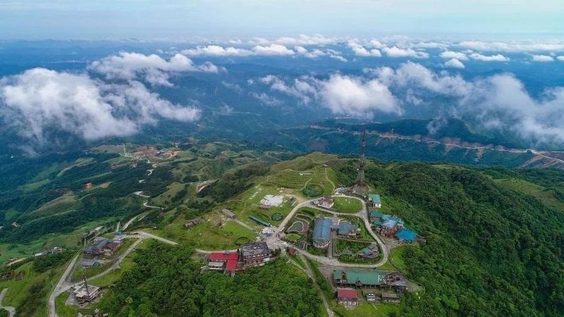
Sun Group được giao đất để triển khai siêu dự án 7.300 tỷ tại nơi được mệnh danh “lạnh nhất Việt Nam” 🔗 MOI
TIN MỚI Ngày 10/6, đoàn công tác UBND tỉnh Lạng Sơn đã kiểm tra thực tế công tác giải phóng mặt bằng (GPMB) và một số nội dung khác của dự án Quần thể khu du lịch sinh thái, cáp treo Mẫu Sơn. Trong ch
Cơ hội trúng xe VF3 khi mua hàng tại S.Home 🔗 MOI
Tháng 6/2026, S.Home - Hệ thống showroom Gạch, Phòng tắm, Nhà bếp toàn quốc chính thức bước sang tuổi thứ 8, đánh dấu sự trưởng thành của hệ thống 25 showroom quy mô toàn quốc, ra mắt chiến dịch bán h
Thời tiết thi tốt nghiệp THPT: Đặc biệt lưu ý các khu vực mưa giông, nắng nóng 🔗 MOI
XEM VIDEO : Miền Bắc có mưa to cục bộ Theo dự báo viên Vũ Tuấn Anh, Trung tâm Dự báo khí tượng thủy văn quốc gia, trong ngày 11/6, khu vực Tây Bắc Bắc Bộ (bao gồm Điện Biên, Lai Châu và phía Bắc Sơn L

Công an TPHCM điều tra vụ bác sĩ thẩm mỹ Chiêm Quốc Thái tố bị đe dọa tống tiền 🔗 MOI
Theo nội dung thông báo mà ông Chiêm Quốc Thái (SN 1974, ngụ phường Bàn Cờ) thông tin, Công an TPHCM nhận đơn tố giác tội phạm của ông tố cáo bà V.T.H.N. (SN 1978, ngụ phường Sài Gòn) có hành vi "vu k
'Ngôi nhà thiếu đàn bà' trở lại Sân khấu 5B 🔗 MOI
Câu chuyện bắt đầu bằng một bi kịch bất ngờ ngay trong kỷ niệm ngày cưới của ông Hải (Vũ Trần). Bà Uyên ( NSND Mỹ Uyên ) và con gái Hạnh (Ngọc Diệp) ra đi vĩnh viễn vì tai nạn sau một cuộc cãi vã của
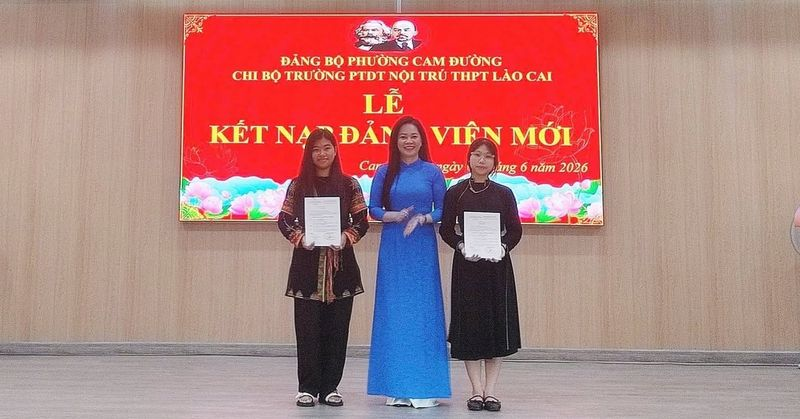
Hai học sinh được kết nạp Đảng trước ngày thi tốt nghiệp THPT 🔗 MOI
Ngày 3/6, hai học sinh vinh dự được kết nạp Đảng đó là em Quan Thị Lệ Khuyên và Nguyễn Ngân Chi, học sinh lớp 12C1. Đây là những học sinh DTTS tiêu biểu, không ngừng nỗ lực vươn lên trong học tập, tíc
Liên minh châu Âu công bố bộ quy tắc dán nhãn nội dung do AI tạo ra 🔗 MOI
Facebook Twitter Lưu bài viết Bản in Copy link Ủy ban châu Âu (EC) hôm 10/6 đã công bố bản cuối cùng của Bộ Quy tắc Thực hành về đánh dấu và dán nhãn các nội dung do trí tuệ nhân tạo (AI) tạo ra, nhằm
Biểu tượng 5G+ trên smartphone cho biết điều gì? 🔗 MOI
Khi đang đi trên đường và bất ngờ thấy biểu tượng 5G+ trên smartphone, điều đó có nghĩa người dùng vừa được trải nghiệm một bước tiến lớn trong công nghệ kết nối. Biểu tượng 5G+ cho biết người dùng đa
Đội tuyển Anh trở lại Miami sau 12 năm: Vết xe đổ hay ngã rẽ mới? 🔗 MOI
Ký ức không vui ở Miami Đường đến World Cup 2026 của Anh: Sứ mệnh chấm dứt cơn khát 60 năm Xả súng gần đại bản doanh của đội tuyển Anh, 9 người thương tích HLV Tuchel lên tiếng về danh sách gây tranh
Tỉ phú Bill Gates điều trần trước Hạ viện Mỹ về ‘hồ sơ Epstein’ 🔗 MOI
(PLO)- Tại phiên điều trần trước Ủy ban Giám sát Hạ viện Mỹ, tỉ phú Bill Gates nói rằng ông không hề biết gì về tội ác của Jeffrey Epstein và rằng Epstein đã cố gắng sử dụng thông tin về đời tư, bao g
11 năm sau kỷ lục Việt Nam, hai anh em ruột vẫn chưa một ngày rời sân khấu xiếc 🔗 MOI
Bén duyên với nghệ thuật xiếc từ năm 3 tuổi, anh em ruột Lê Minh Nhựt và Lê Minh Quang từng được Tổ chức Kỷ lục Việt Nam xác lập danh hiệu "Cặp anh em ruột nghệ sĩ xiếc nhỏ tuổi nhất Việt Nam" vào năm
Tổng thống Iran: Tehran cần vượt qua tình trạng 'không chiến tranh, không hòa bình' 🔗 MOI
Tổng thống Iran Masoud Pezeshkian hôm thứ Tư (10/6) cho biết, Iran phải vượt qua tình trạng "không chiến tranh, không hòa bình", trong bối cảnh các nỗ lực khôi phục đàm phán với Mỹ vẫn đang tiếp diễn
Điện ảnh kể chuyện TPHCM 🔗 MOI
Ngày 10-6, Ban Tuyên giáo và Dân vận Thành ủy TPHCM đã tổ chức sinh hoạt chuyên đề với chủ đề "Phát triển điện ảnh TP HCM gắn với phát huy các giá trị văn hóa, lịch sử, du lịch TP HCM" với sự tham gia
Mỹ tập kích loạt mục tiêu ở Iran 🔗 MOI
"Các lực lượng Mỹ bắt đầu tiến hành thêm các đòn tấn công tự vệ lúc 17h15 ET ngày 10/6 (4h15 ngày 11/6 giờ Hà Nội), nhắm vào nhiều mục tiêu tại Iran theo chỉ đạo của Tổng tư lệnh", Bộ Tư lệnh Trung tâ
Ấn Độ đề cao vai trò của diễn đàn của ASEAN trong duy trì an ninh khu vực 🔗 MOI
Facebook Twitter Lưu bài viết Bản in Copy link Ấn Độ đã nhấn mạnh vai trò quan trọng của Diễn đàn Khu vực ASEAN (ARF) trong việc duy trì an ninh và ổn định khu vực, đồng thời khẳng định đối thoại, ngo
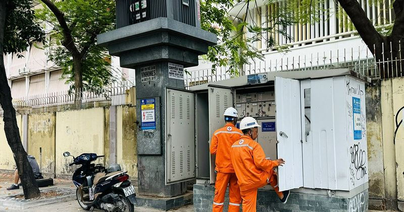
Màu áo cam đi ngược chiều ánh sáng 🔗 MOI
Trưa tháng 4, tôi ghé vào một quán nước mía lọt thỏm giữa đường Lò Gốm (TP.HCM). Một người đàn ông ngồi đối diện tôi gầy guộc, những mảng đồi mồi lấm tấm trên đôi bàn tay gân guốc. Ông nhìn bà cụ bán
Mỹ bí mật lấy trộm siêu vũ khí của Liên Xô như thế nào? 🔗 MOI
Máy bay Mỹ đưa trực thăng Mi-24 Hind về căn cứ. Ảnh: US Army Vì sao Mỹ thèm muốn siêu vũ khí của Liên Xô? Cuối những năm 1960, khi nghiên cứu chiến thuật dùng trực thăng của Mỹ tại Việt Nam, các nhà t
Liên minh châu Âu và Hàn Quốc ký hiệp định thương mại kỹ thuật số 🔗 MOI
Facebook Twitter Lưu bài viết Bản in Copy link Trong khuôn khổ Hội nghị Thượng đỉnh Liên minh châu Âu (EU)-Hàn Quốc diễn ra tại Brussels ngày 10/6, EU và Hàn Quốc đã chính thức ký kết Hiệp định thương
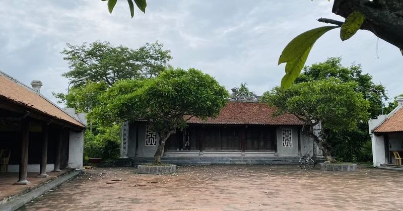
Ai là trạng nguyên nhỏ tuổi nhất trong lịch sử Việt? 🔗 MOI
1. Ai là trạng nguyên nhỏ tuổi nhất trong lịch sử khoa bảng Việt Nam? Mạc Đĩnh Chi 0% Lê Quý Đôn 0% Nguyễn Hiền 0% Nguyễn Bỉnh Khiêm 0% Chính xác Theo thông tin từ Bảo tàng Lịch sử Quốc gia, Nguyễn Hi
Bước tiến giúp xây trung tâm dữ liệu không gian của Musk 🔗 MOI
Trong video đăng trên tài khoản X của SpaceX ngày 9/6, tỷ phú Elon Musk hé lộ thiết kế chi tiết của AI1 - thế hệ đầu tiên trong loạt vệ tinh mà công ty dự kiến sử dụng làm trung tâm dữ liệu trên quỹ đ
Nhà thờ 5 tháp vòm như 'cung điện' ở TP.HCM, có tượng Đức Mẹ bằng đồng đen 🔗 MOI
Chiều đầu tháng 6.2026, từ ngã tư Hàng Xanh (quận Bình Thạnh cũ, TP.HCM ), PV Thanh Niên lân la qua các con hẻm trên đường Xô Viết Nghệ Tĩnh rồi rẽ vào 78 Nguyễn Cửu Vân. Tại đây, chúng tôi ấn tượng b
TRÁI NGỌT TỪ SỰ TỬ TẾ (*): Gieo tri thức, gặt năng suất 🔗 MOI
Trong khuôn khổ Đại hội XIV Công đoàn Việt Nam vừa qua, khi trao đổi với các đại biểu, Thủ tướng Lê Minh Hưng nhấn mạnh Việt Nam đặt mục tiêu tăng trưởng kinh tế cao, hướng tới phát triển nhanh và bền
Khơi thông mạch logistics vùng ĐBSCL 🔗 MOI
Ngày 10-6, UBND TP Cần Thơ tổ chức Hội thảo khoa học "Phát triển dịch vụ logistics TP Cần Thơ với vai trò trung tâm vùng ĐBSCL". "Điểm nghẽn" làm giảm lợi nhuận TS Lê Thanh Hòa, Quyền Viện trưởng Viện
Lịch nghỉ lễ Quốc khánh 2-9 năm 2026 chính thức, được nghỉ 5 ngày liên tục 🔗 MOI
Chi tiết lịch nghỉ lễ Quốc khánh 2-9 năm 2026 Theo thông báo ngày 7-6 của Bộ Nội vụ, lịch nghỉ lễ Quốc khánh năm 2026 đối với từng nhóm đối tượng cụ thể như sau: Đối với công chức, viên chức: Được ngh
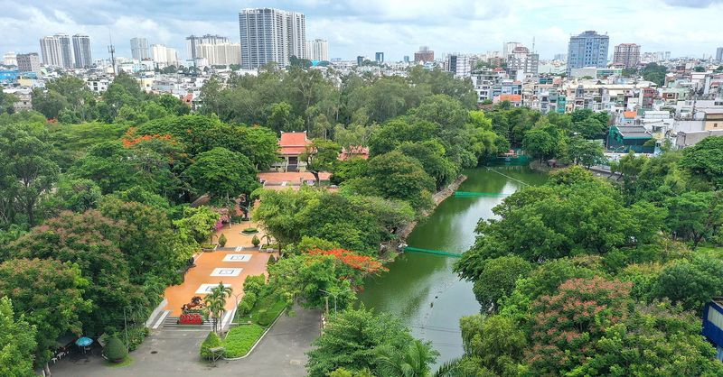
Huy động lực lượng tinh nhuệ, công nghệ hiện đại tìm kiếm hài cốt liệt sĩ tại công viên Lê Thị Riêng 🔗 MOI
Nhìn từ trên cao, công viên Lê Thị Riêng hiện ra xanh mát giữa lòng TP.HCM - Ảnh: TRÍ ĐỨC Với nhận định từ nhân chứng lịch sử và kiểm chứng các tư liệu, số lượng hài cốt liệt sĩ tại công viên này có t

Huy động nguồn lực cho tăng trưởng xanh 🔗 MOI
Pháp luật Bài viết phân tích tiềm năng, thực trạng và định hướng phát triển các mô hình du lịch biển tại Việt Nam nhằm hướng tới một nền kinh tế biển xanh, bền vững. Với đường bờ biển dài hơn 3.260 km
SpaceX chuẩn bị đợt IPO lớn nhất lịch sử Phố Wall 🔗 MOI
Facebook Twitter Lưu bài viết Bản in Copy link SpaceX dự kiến sẽ chính thức giao dịch trên sàn Nasdaq vào ngày 12/6 với mã chứng khoán SPCX trong đợt phát hành cổ phiếu lần đầu ra công chúng (IPO) đượ
Ban Quản lý dự án đầu tư xây dựng phường Thới An thông báo (lần 2) 🔗 MOI
Căn cứ Quyết định số 6128/QĐ-SGTVT ngày 30-10-2018 của Sở Giao thông vận tải (nay là Sở Xây dựng) về phê duyệt dự án Đầu tư xây dựng đường Liên phường Thới An - Thạnh Xuân (tuyến 2); Căn cứ Nghị quyết
Bán kết Cúp Quốc gia: Đại chiến vì danh hiệu 🔗 MOI
"Chung kết sớm" Ninh Bình vs Thể Công Viettel Cuộc đối đầu Ninh Bình vs Thể Công Viettel là tâm điểm của vòng bán kết Cúp Quốc gia Chứng khoán LPBank 2025/26. Cách đây ít ngày, cả hai có cuộc đua tran
Ảnh dự thi: Đời thợ, đời thường 🔗 MOI
Vệ sinh sứ cách điện ẢNH: NGUYỄN VĂN SẴNG Niềm vui trên đường trở về nhà ẢNH: NGUYỄN VĂN SẴNG 220 triệu đồng đang đợi chủ nhân Kỷ niệm 50 năm ngày thành lập Sở Quản lý và phân phối điện TP.HCM (7.8.19
Lịch đấu billiards hôm nay: Bao Phương Vinh xuất trận, Ngô Đình Nại tranh vé chung kết 🔗 MOI
Bảng đấu có 2 cơ thủ Việt Nam World Cup billiards Ankara 2026 đang diễn ra ở Thổ Nhĩ Kỳ, hôm nay sẽ thi đấu vòng loại cuối cùng. Tại vòng đấu này, carom 3 băng Việt Nam có 3 đại diện góp mặt tranh tài
Diễn đàn ASEAN-New Zealand về hợp tác tiểu vùng và Hội thảo ASEAN-Anh kỷ niệm 5 năm thiết lập quan hệ Đối tác Đối thoại 🔗 MOI
Đây là các hoạt động diễn ra trong khuôn khổ của Diễn đàn Tương lai ASEAN 2026, nhằm thúc đẩy hợp tác giữa ASEAN với hai đối tác là New Zealand và Vương quốc Anh. Diễn đàn và Hội thảo có sự tham gia c
Giá bạc hôm nay 11/6/2026 tiếp tục giảm sâu về mốc 60 triệu đồng/kg 🔗 MOI
Giá bạc trong nước ngày 11/6/2026 Ngày giao dịch 10/6 chứng kiến giá bạc giảm mạnh ngay từ khi mở cửa. Các thương hiệu bạc lớn đồng loạt đưa giá bạc thỏi lùi sâu dưới mốc 70 triệu đồng/kg. Ước tính, g
Đề xuất hàng loạt cơ chế đặc thù khi làm đường sắt TP.HCM - Cần Thơ 🔗 MOI
Trong hồ sơ nghiên cứu tiền khả thi vừa gửi Bộ Xây dựng, Ban Quản lý (BQL) dự án Mỹ Thuận đề xuất nhiều cơ chế đặc thù để đẩy nhanh tiến độ đầu tư tuyến đường sắt TP.HCM - Cần Thơ. Theo đơn vị lập dự
Hình ảnh nhiều tài xế ở Hà Nội liều mình vượt rào chắn, 'chạy đua' với tàu hỏa 🔗 MOI
XEM CLIP: Tối 7/6, tại Km17+400 tuyến đường sắt Bắc - Nam, đoạn qua xã Thường Tín (Hà Nội), xảy ra vụ tai nạn giao thông đường sắt làm đầu tàu SE19, một ô tô và 4 xe máy bị hư hỏng. Nguyên nhân ban đầ
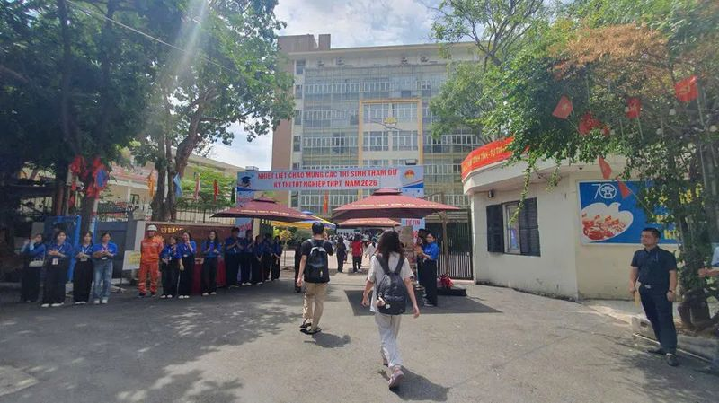
Dấu mốc của một thế hệ 🔗 MOI
Đây là năm thứ hai kỳ thi được tổ chức theo Chương trình giáo dục phổ thông (GDPT) 2018. Khác với các thế hệ trước, lứa học sinh sinh năm 2008 đã được tiếp cận phương pháp học tập chú trọng phát triển
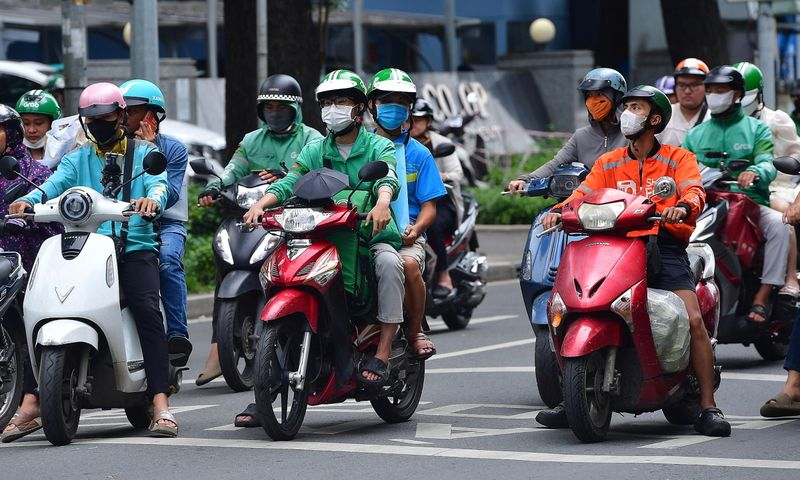
Lấp khoảng trống an sinh cho hàng trăm nghìn tài xế công nghệ 🔗 MOI
Đầu tháng 6, góp ý sửa đổi Luật BHXH, Luật Bảo hiểm y tế và các chính sách liên quan, Bảo hiểm xã hội TP HCM đề xuất đưa tài xế công nghệ vào diện tham gia BHXH bắt buộc. Theo cơ quan này, kiến nghị x
Chiến sự Ukraine ngày 1.568: Kyiv phóng tên lửa Flamingo, Nga điều tra 2 vụ đánh bom 🔗 MOI
Lực lượng Không quân Ukraine cho biết trong đêm 9.6 và rạng sáng 10.6, quân đội Nga đã huy động 207 máy bay không người lái (UAV) các loại tấn công vào lãnh thổ nước này. Các đơn vị phòng không Ukrain
Ít ai ngờ omega-3 và chất xơ trong mè đen lại mang đến những lợi ích này 🔗 MOI
Dưới đây là những lợi ích sức khỏe tiềm năng và một số lưu ý khi sử dụng hạt mè đen, theo Health (Mỹ). Hỗ trợ tiêu hóa tốt hơn Mè đen chứa nhiều chất xơ hơn mè trắng nhờ vẫn giữ nguyên lớp vỏ ngoài. K
Cuộc chạy đua đưa World Cup 2026 đến Bắc Mỹ 🔗 MOI
Giới hâm mộ bóng đá toàn cầu đang háo hức chờ đợi tiếng còi khai cuộc của World Cup 2026 vào ngày 11/6, kỳ đại hội đầu tiên trong lịch sử được đồng đăng cai bởi ba quốc gia Mỹ, Mexico và Canada. Cuộc
Messi ngỡ ngàng khi gặp con trai đồng đội cũ 🔗 MOI
Sau tiếng còi mãn cuộc tại sân Jordan-Hare, Alabama, Messi nán lại trò chuyện khá lâu với một cầu thủ Iceland. Cả hai thể hiện sự thân thiết qua những cử chỉ gần gũi, khiến nhiều người hâm mộ tò mò về

Xoắn dây tinh và thời gian vàng cấp cứu 🔗 MOI

Bộ Tài chính đồng hành cùng doanh nghiệp nhỏ và vừa trên hành trình chuyển đổi kép 🔗 MOI
Chuyển đổi số Trong bối cảnh tiêu chuẩn ESG, yêu cầu Net Zero và sức ép cạnh tranh toàn cầu ngày càng gia tăng, phần lớn doanh nghiệp Việt Nam, đặc biệt là doanh nghiệp nhỏ và vừa đang đối mặt với kho
Nhà sản xuất máy bay ATR nhìn thấy cơ hội ở 87 đường bay ngắn tại Việt Nam 🔗 MOI
Máy bay ATR 72-600 được đánh giá phù hợp với các chặng bay ngắn - Ảnh: ATR 87 đường bay ngắn ở Việt Nam chưa khai thác Nhà sản xuất máy bay ATR cho biết nghiên cứu chung với Tổng công ty Tư vấn thiết

Giải ngân đầu tư công 5 tháng đạt gần 220.000 tỷ đồng 🔗 MOI
Giải ngân từ đầu năm đến hết ngày 31/5/2026 là 219.358,8 tỷ đồng, đạt 21,6% kế hoạch Thủ tướng Chính phủ giao. Ảnh minh hoạ: Thu Thảo/Mekong ASEAN. Theo Báo cáo của Bộ Tài chính, tổng kế hoạch vốn năm
Những gợi mở về mô hình tăng trưởng mới cho ASEAN 🔗 MOI
Chiều ngày 10/6, phiên thảo luận “Những mô hình phát triển mới trong bối cảnh chuyển dịch toàn cầu” đã diễn ra, đây cũng là phiên thảo luận cuối cùng trong khuôn khổ Diễn đàn Tương lai ASEAN 2026. Mở

Báo cáo tài chính doanh nghiệp 🔗 MOI
Tổng tài sản của VNPT đến cuối năm 2025 đạt 119.610,3 tỷ đồng, tăng gần 6%. Trong đó, hàng tồn kho tăng hơn 3 lần lên 4.711,4 tỷ đồng, chủ yếu do nguyên liệu, vật liệu và chi phí sản xuất kinh doanh d
Tăng cường chống buôn lậu, vận chuyển, sản xuất, mua bán, tàng trữ, sử dụng trái phép thuốc lá 🔗 MOI
Thủ tướng Chính phủ đề nghị Ủy ban Trung ương Mặt trận Tổ quốc Việt Nam và các tổ chức thành viên phối hợp chặt chẽ với các bộ, ngành, chính quyền địa phương vận động đoàn viên, hội viên và nhân dân t
Hà Nội: Giá đất nền vùng ven có nơi giảm cả tỷ đồng/lô 🔗 MOI
Cắt lỗ cả tỷ đồng/m2 Khảo sát của phóng viên cho thấy, tại nhiều khu vực vùng ven Hà Nội từng là tâm điểm của các cơn sốt đất, giá đất nền hiện đã giảm đáng kể so với thời kỳ đỉnh sốt được thiết lập t
Hệ dẫn động ảnh hưởng thế nào đến độ mòn lốp và tiêu thụ nhiên liệu? 🔗 MOI
Với phần lớn người dùng ô tô tại Việt Nam, lốp xe thường chỉ được quan tâm khi cán đinh, xì hơi hoặc đến kỳ đăng kiểm. Thế nhưng, ít ai nhận ra rằng hệ dẫn động, bộ phận âm thầm truyền sức mạnh từ độn
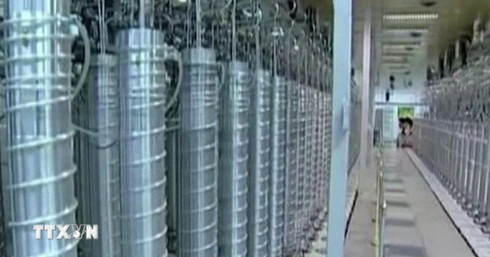
IAEA yêu cầu Iran cung cấp thông tin về kho dự trữ urani ngay lập tức 🔗 MOI
Facebook Twitter Lưu bài viết Bản in Copy link Theo AFP và RIA Novosti, ngày 10/6, Hội đồng Thống đốc Cơ quan Năng lượng Nguyên tử Quốc tế (IAEA) đã thông qua nghị quyết do Anh, Pháp, Đức và Mỹ bảo tr
Cùng nhau kiến tạo tương lai 🔗 MOI
Cuộc thi "Lắng nghe người dân hiến kế" lần thứ 7 được Báo Người Lao Động phát động từ tháng 9-2025 với chủ đề "Để TP HCM thành siêu đô thị vùng hiện đại, xanh, thông minh". Sau gần 10 tháng triển khai
Cơ thể thay đổi ra sao sau hai tuần không uống bia? 🔗 MOI
Bia là thức uống thường dùng trong các buổi gặp gỡ, liên hoan hay sau giờ làm việc. Tuy nhiên, uống bia thường xuyên có thể ảnh hưởng đến nhiều cơ quan trong cơ thể, từ gan, tim mạch đến não bộ và giấ

Hiểu đúng thí điểm vùng phát thải thấp từ 1-7: Không cấm hết xe máy xăng như lời đồn 🔗 MOI
Chi tiết khu vực dự kiến thí điểm vùng phát thải thấp tại Hà Nội từ ngày 1-7-2026 - Ảnh: VTV Từ ngày 1-7, Hà Nội bắt đầu triển khai thí điểm vùng phát thải thấp (Low Emission Zone - LEZ) tại 9 phường

quản lý ngân sách hiệu quả, phục vụ chính quyền địa phương 2 cấp 🔗 MOI
Tài chính Không chỉ tinh gọn, sắp xếp bộ máy và kịp thời tham mưu, ban hành, triển khai các văn bản hướng dẫn về kế toán phục vụ mô hình chính quyền địa phương 2 cấp, tham gia các đoàn công tác cùng B
Dự đoán tỉ số World Cup: Chủ nhà Mexico gây thất vọng trước Nam Phi 🔗 MOI
Tiền đạo Jimenez của tuyển Mexico - Ảnh: REUTERS Các trận đấu mở màn World Cup thường không mấy hấp dẫn, đặc biệt khi đội chủ nhà không phải là đội mạnh, như Mexico ở giải đấu năm nay. Ở World Cup 202
Lịch trực tiếp bán kết Cúp quốc gia: Ninh Bình đấu Thể Công - Viettel 🔗 MOI
Bán kết Cúp quốc gia 2025 - 2026 là cuộc đối đầu giữa Thép Xanh Nam Định gặp Công An TP.HCM và Ninh Bình chạm trán Thể Công - Viettel - Ảnh: FPT PLAY Lúc 18h ngày 11-6 sẽ diễn ra hai trận bán kết Cúp
Thi tốt nghiệp THPT 2026: Chung tay hỗ trợ, giúp sức thí sinh 🔗 MOI
Thí sinh Liên Anh, Trường THPT Nguyễn Thị Minh Khai, đến làm thủ tục thi tại Trường THPT Lê Quý Đôn chiều 10-6 - Ảnh: DUYÊN PHAN Bộ trưởng Hoàng Minh Sơn chia sẻ: Năm nay là năm đầu tiên chúng ta tổ c
Từ nhân viên điều phối vận tải đến thủ môn xuất sắc nhất Giải bóng đá công nhân, viên chức Việt Nam 🔗 MOI
Thủ môn Nguyễn Đức Mạnh (giữa) được trao giải Thủ môn xuất sắc nhất giải - Ảnh: QUANG ĐỊNH Chiều 10-6, đội Công đoàn Thành Thắng Thăng Long TP.HCM đánh bại Công đoàn Đồng Nai 2 với tỉ số 6-1 trong trậ
Xử phạt người ‘chặt chém’ du khách 430.000 đồng cho 10 chiếc bánh rán 🔗 MOI
Bà Y. tại cơ quan công an - Ảnh: D.C. Tối 10-6, Công an phường Hoàn Kiếm (Hà Nội) đã ra quyết định xử phạt bà P.T.Y.
SHB nhận bằng khen của Bộ Công an về phong trào bảo vệ an ninh Tổ quốc 🔗 MOI
Đại tá Nguyễn Tiến Đạt, Phó Giám đốc Công an TP Hà Nội trao bằng khen và công nhận tới đại diện lãnh đạo SHB - Ảnh: SHB SHB được khen thưởng về công tác bảo đảm an ninh, trật tự Ngày 9-6 tại Hà Nội, C
điện hạt nhân 🔗 MOI
Phó Thủ tướng Bùi Thanh Sơn yêu cầu tỉnh Khánh Hoà tổ chức thực hiện công tác di dân, tái định cư trong quý 1/2026, bảo đảm người dân đến nơi ở mới có cuộc sống ổn định, sinh kế bền vững.

Đổi mới công tác xây dựng và thi hành pháp luật: Dấu ấn 1 năm thực hiện Nghị quyết số 66-NQ/TW 🔗 MOI
Tài chính Trong tiến trình phát triển đất nước, cải cách thể chế luôn được xác định là khâu đột phá để khơi thông nguồn lực và nâng cao năng lực cạnh tranh quốc gia. Trên nền tảng những chuyển động mạ

nhà đất công đôi dư 🔗 MOI
Tài chính Đằng sau hàng chục nghìn cơ sở nhà, đất công chưa được xử lý dứt điểm không chỉ là câu chuyện thủ tục hay hồ sơ pháp lý, mà còn là tâm lý e ngại trách nhiệm trong quá trình thực thi. Mệnh lệ
Phát huy vốn quý người cao tuổi 🔗 MOI
Dành gần trọn đời cho lịch sử, địa chí Nam bộ Trong căn nhà mới vừa được bàn giao, nhà nghiên cứu Nguyễn Đình Tư ngồi quây quần bên con cháu chuẩn bị đón đoàn đại biểu TPHCM đến thăm nhân dịp Ngày Ngư
Chuyện nhỏ ở chung cư 🔗 MOI
Mấy hôm nay, thành phố sáng nắng chiều mưa. Nhiều người đi làm về đội cả mưa gió, sấm chớp, thương nhất là các chị em về nhà ướt rượt cả tóc tai, váy áo. Về đến chung cư, bãi xe máy ngổn ngang màu sắc
Chiều 11-6 nhiều khu vực có mưa dông, thí sinh cần chủ động mang áo mưa 🔗 MOI
Thí sinh đến làm thủ tục dự thi tốt nghiệp THPT 2026 tại Hà Nội vào ngày 10-6. Ảnh: PHÚC HẬU Theo thông tin từ Trung tâm Dự báo khí tượng - thủy văn quốc gia, chiều 11-6 nhiều khu vực có khả năng có m
Đà Nẵng liên tiếp đấu tranh thành công các vụ việc vi phạm pháp luật trên biển 🔗 MOI
Theo đó, thực hiện đợt cao điểm tấn công, trấn áp tội phạm về ma túy và các loại tội phạm, vi phạm pháp luật trên biển trong tháng 6 năm 2026, Bộ Tư lệnh Vùng Cảnh sát biển 2 triển khai đồng bộ các bi
Tuyển Anh thắng '3 sao', chạy đà hoàn hảo cho World Cup 2026 🔗 MOI
Đội hình ra sân tuyển Anh Declan Rice sớm giúp đội bóng áo trắng vươn lên dẫn trước với cú đá ở góc hẹp Anthony Gordon là người kiến tạo cho Rice mở tỷ số Cơ hội bị Madueke bỏ lỡ 45 phút đầu khép lại
Vướng mắc trong công tác tái định cư ở Đà Nẵng 🔗 MOI
Việc chuẩn bị quỹ đất tái định cư tại một số dự án ở Đà Nẵng có nhiều bất cập như khi cơ quan chức năng thu hồi đất của người dân xong mới tìm kiếm quỹ đất để bố trí tái định cư. Do vậy, không ít ngườ
Hôm nay, hơn 1,2 triệu thí sinh bước vào Kỳ thi tốt nghiệp THPT 2026 🔗 MOI
Hôm nay, hơn 1,2 triệu thí sinh bước vào Kỳ thi tốt nghiệp THPT 2026 Sáng 11/6, thí sinh làm bài thi Ngữ văn trong thời gian 120 phút; buổi chiều thi môn Toán với thời gian 90 phút. Sáng 12/6, thí sin
Nhà chiêm tinh tiên đoán ‘gây sốt’ về tuyển Anh tại World Cup 2026 🔗 MOI
Tuyển Anh được nhà chiêm tinh Greenstone Lobo dự đoán tiến xa tại World Cup 2026 – giải đấu diễn ra tại Mỹ, Mexico và Canada, chính thức khởi tranh vào 2h đêm nay (12/6). Với thành tích toàn thắng tại
AWS giới thiệu trợ lý mua sắm trí tuệ nhân tạo tùy biến cho ngành bán lẻ 🔗 MOI
Ngày 10/6, AWS chính thức ra mắt Agentic Shopping Assistant - lần đầu tiên đóng gói toàn bộ kinh nghiệm và chuyên môn từ quá trình xây dựng Alexa for Shopping thành một giải pháp trí tuệ nhân tạo (AI)
Thông điệp ASEAN đoàn kết, tự cường và dấu ấn Việt Nam 🔗 MOI
Thông qua việc tổ chức thành công AFF, Việt Nam ghi dấu ấn sâu sắc về một đất nước đang phát triển và hội nhập mạnh mẽ, tích cực đóng góp vào công việc chung của cộng đồng quốc tế. Chủ đề của AFF năm
Sạt lở núi khiến 3 thanh niên bị vùi lấp, tử vong 🔗 MOI
Ngày 11-6, thông tin từ UBND xã Pắc Ta, tỉnh Lai Châu, cho biết trên địa bàn xã vừa xảy ra vụ sạt lở đất đá khiến 3 người tử vong. Trước đó, vào khoảng 12 giờ 30 ngày 9-6, Ban Chỉ huy phòng thủ dân sự
Loại rau có tên xấu xí là đặc sản chứa nhiều chất bổ dưỡng 🔗 MOI
Tôi hay tìm mua rau bò khai giá khoảng 40.000-60.000 đồng/kg về ăn và phơi nấu nước uống. So với các loại rau xanh thông thường, rau này có ưu điểm gì về mặt dinh dưỡng? (Hoàng Vân - Hà Nội) Lương y B
iPhone 18 chưa ra mắt nhưng nhiều tín đồ Apple đã có lý do để dừng chờ đợi? 🔗 MOI
Thói quen "đợi đời sau" của người dùng iPhone Mỗi khi Apple chuẩn bị ra mắt một thế hệ iPhone mới, không ít người lại quyết định hoãn kế hoạch mua sắm. Tâm lý này xuất phát từ suy nghĩ rằng phiên bản
Quá khứ ùa về từ những lần thức đêm xem bóng đá 🔗 MOI
HLV Nguyễn Tuấn Phong Tiếp đến là việc thi đấu vào khung giờ tại World Cup 2026 làm chúng ta nhớ lại những kỳ World Cup được tổ chức tại Mexico, Mỹ vào những năm 1986, 1994. Cảm giác thức đêm để xem n
Thành phố trực thuộc Trung ương rộng nhất Việt Nam chốt lộ trình thu hồi đất của hơn 7.000 hộ dân để làm siêu dự án hơn 800.000 tỷ chưa từng có trong lịch sử 🔗 MOI
TIN MỚI UBND TP. Đồng Nai vừa ban hành Kế hoạch số 78 về thực hiện công tác bồi thường, hỗ trợ, tái định cư dự án Khu đô thị thông minh ven sông tại xã Đại Phước (khu Bắc và khu Nam). Kế hoạch nhằm đẩ
Bộ trưởng Hoàng Minh Sơn lưu ý nguyên tắc xử lí tình huống bất thường 🔗 MOI
Lời nhắn gửi của Bộ trưởng Đến thăm và làm việc tại điểm thi Trường THPT Nguyễn Du - Thanh Oai (Hà Nội), Bộ trưởng Bộ GD&ĐT Hoàng Minh Sơn gặp gỡ, động viên các thí sinh đang làm thủ tục dự thi. Bộ tr
Vợ chồng ở Nghệ An sinh 10 người con, 4 con gái lấy chồng chung xóm 🔗 MOI
Nhà đông con Vợ chồng ông Thái Viết Trí (SN 1972) và bà Phạm Thị Sâm (SN 1971, xã Vân Tụ, tỉnh Nghệ An) sinh được 10 người con (4 gái, 6 trai). Con gái cả của ông bà năm nay 35 tuổi, còn con trai út m
Nhận định Mexico vs Nam Phi: Chủ nhà mở màn World Cup tưng bừng 🔗 MOI
Mexico đi vào lịch sử ngay trước thời điểm trái bóng bắt đầu lăn, khi trở thành quốc gia đầu tiên ba lần đăng cai VCK World Cup. Trong quá khứ, họ từng là chủ nhà hai kỳ World Cup 1970 và 1986. Đứng t
Dịch vụ mua bán ảnh 'sống ảo' 🔗 MOI
Đầu thang 6, Huyền Trang, 20 tuổi, sinh viên năm hai tại Hà Nội, chi 80.000 đồng mua 10 bức ảnh chụp cảnh uống trà chiều và hồ bơi tại một khu nghỉ dưỡng ở Phú Quốc. Sau vài phút nhắn tin, trao đổi tr
Hiện thực hóa khát vọng trở thành đô thị di sản đặc trưng 🔗 MOI
Để hiện thực hóa mục tiêu đó, thành phố đang tập trung nguồn lực, triển khai đồng bộ hàng loạt chương trình, dự án trọng điểm mang tầm quốc gia, tạo nên diện mạo phát triển mới cho địa phương. Thành p
Không để công tác dân nguyện đi sau những bức xúc của người dân 🔗 MOI
Tài sản công dôi dư sau sắp xếp còn chậm được xử lý Phát biểu khai mạc, Chủ tịch Quốc hội (QH) Trần Thanh Mẫn đề nghị cần phát huy tinh thần họp nhanh, gọn, tập trung hiệu quả. Các quyết sách của UBTV
Ronaldo kém duyên, Bồ Đào Nha thắng nhọc trước World Cup 🔗 MOI
Đội hình ra sân Bồ Đào Nha Ronaldo đá chính và phung phí những cơ hội đầu tiên Bồ Đào Nha thi đấu lấn lướt trước đại diện châu Phi Đến phút 23, Pedro Neto khai thông bế tắc bằng cú sút chân trái hiểm
Đi trên vỉa hè để né kẹt xe, 529 xe máy bị CSGT TP.HCM phạt nguội 🔗 MOI
Đi trên vỉa hè vốn là hành vi bị cấm và có mức xử phạt khá cao, nhưng tại nhiều tuyến đường đông đúc ở TP.HCM, không ít người vẫn lựa chọn cách này để né ùn tắc vào giờ cao điểm. Chỉ trong hơn 1 tháng
Phim truyền hình về đấu tranh chống tội phạm ma túy lên sóng 🔗 MOI
Phim dự kiến phát sóng lúc 20 giờ thứ năm và sáu hằng tuần trên VTV3 từ ngày 18.6, nối tiếp chiến lược làm mới phim truyền hình của VFC trong năm 2026. Điểm nổi bật của Lửa trắng nằm ở việc khai thác
Báo Tiền Phong tổ chức livestream 'Gợi ý và nhận định đề thi tốt nghiệp THPT 2026' 🔗 MOI
Kỳ thi tốt nghiệp THPT năm 2026 diễn ra trong hai ngày 11 và 12/6 với sự tham gia của hơn 1,2 triệu thí sinh trên cả nước. Đây là kỳ thi có ý nghĩa quan trọng, vừa xét công nhận tốt nghiệp THPT vừa l
Hơn 1,2 triệu thí sinh bước vào kỳ thi kỷ lục 🔗 MOI
Tại Hà Nội , sau những ngày mưa liên tiếp, sớm 11/6, thời tiết dễ chịu, khoảng 27-28 độ C. Để kịp giờ thi lúc 7h30, nhiều học sinh được bố mẹ đưa tới trường từ hơn 6h. Lâm Anh, lớp 12 trường THPT Yên
Ngày Quốc tế Vui chơi 11/6/2026: Bảo vệ trò chơi, bảo vệ tuổi thơ 🔗 MOI
Facebook Twitter Lưu bài viết Bản in Copy link Ngày 25/3/2024, Đại hội đồng Liên hợp quốc đã thông qua bằng đồng thuận Nghị quyết số 78/268, chọn ngày 11/6 hàng năm là Ngày Quốc tế Vui chơi theo sáng
Ảnh vệ tinh tiết lộ thiệt hại tại căn cứ không quân Israel sau vụ tấn công tên lửa của Iran 🔗 MOI
Hình ảnh có độ phân giải thấp được vệ tinh Sentinel-2 của Ủy ban châu Âu ghi lại hôm 9/6 cho thấy dấu hiệu thiệt hại tại căn cứ không quân Ramat David của Israel, sau cuộc tấn công bằng tên lửa đạn đạ
Kỳ thi tốt nghiệp THPT 2026: Quy mô kỷ lục, siết chặt an ninh 🔗 MOI
Hôm nay, 11-6, hơn 1,22 triệu thí sinh trên cả nước chính thức bước vào ngày thi chính thức đầu tiên của kỳ thi tốt nghiệp THPT năm 2026. Đây là kỳ thi có quy mô lớn nhất từ trước đến nay, đồng thời l
Sáng nay, hơn 1,2 triệu thí sinh bắt đầu làm bài thi tốt nghiệp THPT 🔗 MOI
Facebook Twitter Lưu bài viết Bản in Copy link Sáng nay, 11/6, hơn 1,2 triệu thí sinh trên khắp cả nước đã chính thức bước vào Kỳ thi Tốt nghiệp Trung học phổ thông năm 2026 với môn thi đầu tiên là mô
Cầu nối cao tốc Bến Lức - Long Thành với cảng Cái Mép trước hợp long 🔗 MOI
Cầu Phước An được khởi công tháng 6/2023, dài hơn 4,3 km, tổng vốn gần 4.900 tỷ đồng. Hiện toàn bộ 30 khối dầm chính đã hoàn thành, khối lượng thi công đạt hơn 90%. Cầu Phước An được khởi công tháng 6
Cơ thể kiệt sức, ngón tay vẫn vuốt màn hình đến rạng sáng 🔗 MOI
Chàng trai vừa trải qua ca làm việc 10 tiếng, cột sống mỏi nhừ, hai thái dương đau giật từng hồi. Anh biết mình cần ngủ, thậm chí rất thèm ngủ, nhưng ngón tay cái vẫn tiếp tục vuốt, chạm, vuốt tiếp, c
Thất lạc con suốt 48 năm, gia đình ở Khánh Hoà treo thưởng nửa tỷ đồng tìm kiếm 🔗 MOI
48 năm thất lạc con Giữa trưa, điện thoại ông Nguyễn Minh Phước (SN 1961, thôn Quảng Đức, xã Cam Lâm, tỉnh Khánh Hòa ) hiện lên dòng tin nhắn từ người lạ hỏi về việc có phải ông đang tìm người thân th
Thi tốt nghiệp THPT: Những hành trình không bỏ cuộc với ước mơ 🔗 MOI
3 năm theo đuổi một giấc mơ Chiều 10.6, thí sinh làm thủ tục dự kỳ thi tốt nghiệp THPT năm 2026. Tại Trường THPT Trưng Vương (TP.HCM), chúng tôi gặp Nguyễn Khang Nguyên - chàng trai 3 năm kiên định
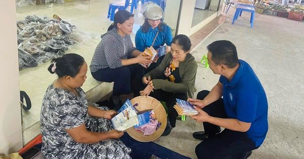
BHXH tự nguyện thêm sức hút 🔗 MOI
Không chỉ được hưởng lợi từ việc điều chỉnh tăng lương hưu, người tham gia BHXH tự nguyện còn có thêm nhiều quyền lợi mới và mức hỗ trợ cao hơn từ ngân sách Nhà nước. Chính sách ngày càng linh hoạt, t
Băng ở Nam Cực đang tan nhanh hơn dự báo 🔗 MOI
Facebook Twitter Lưu bài viết Bản in Copy link Băng ở biển Nam Cực đang tan nhanh hơn đáng kể vào mùa Hè, do tác động kết hợp của sóng đại dương, hiện tượng ngập lụt do nước bề mặt và sự phát triển củ
Giải cứu tê tê Java bị nhồi nhét thức ăn để tăng trọng lượng 🔗 MOI
Mới đây, nhóm phản ứng nhanh của Trung tâm Bảo tồn động vật hoang dã tại Việt Nam (Save Vietnam's Wildlife) phối hợp với Vườn quốc gia Cúc Phương tiếp nhận và cứu hộ 1 con tê tê Java từ tỉnh Thanh Hóa
Liên hợp quốc cảnh báo nguy cơ tái bùng phát xung đột tại Trung Đông 🔗 MOI
Facebook Twitter Lưu bài viết Bản in Copy link Ngày 10/6, Tổng Thư ký Liên hợp quốc Antonio Guterres đã bày tỏ quan ngại về khả năng xung đột giữa Mỹ và Iran bùng phát trở lại sau những động thái leo
Hết đường lộng hành 🔗 MOI
Theo đó, chiều 8-6, Cơ quan Cảnh sát điều tra Công an tỉnh Khánh Hòa đã tống đạt quyết định khởi tố bị can, thi hành lệnh bắt tạm giam đối với ông Nguyễn Đức Hưng (sinh năm 1971, ngụ thôn Bình Khánh,
NSND Hoàng Cúc tuổi 70 sống chung với ung thư 16 năm, hạnh phúc vì có con dâu tuyệt vời 🔗 MOI
Sau phim Hoa hồng trên ngực trái, gần 7 năm qua NSND Hoàng Cúc không đóng phim. Bà nói phần vì sức khỏe không cho phép do làm phim dài ngày, phần vì liên tục phẫu thuật và cần thời gian phục hồi nên c
Nhiều thí sinh thi tốt nghiệp THPT đoán đề văn ra chủ đề tuổi trẻ, vì sao? 🔗 MOI
Thí sinh trong ngày làm thủ tục dự thi tốt nghiệp THPT 2026 hôm 10.6 ảnh: Độc Lập Chia sẻ với Thanh Niên tại điểm thi Trường THPT Ngô Quyền (P.Tân Mỹ, TP.HCM), Trần Phúc Nhân, lớp 12 Trường THPT Tân P
Tin lời hứa được vay lãi 0%, khách chi 156 triệu mua sở hữu kỳ nghỉ rồi thua kiện 🔗 MOI
Mua kỳ nghỉ vì tin vào cam kết hỗ trợ vay với lãi suất 0% Theo trình bày của bà L. (ngụ TPHCM), vào tháng 8/2019, bà tham gia một hội thảo giới thiệu về mô hình sở hữu kỳ nghỉ do Công ty Đ. tổ chức.

🔗 MOI
Bộ trưởng Bộ GD-ĐT Hoàng Minh Sơn nêu rõ, cũng như các năm, việc ra đề thi tốt nghiệp THPT trước tiên phải bám sát vào yêu cầu của chương trình giáo dục phổ thông. Thứ hai, việc ra đề giữa các môn thi
Ga Hà Nội hơn 120 năm 🔗 MOI
Ga Hà Nội được nhiều người gọi là ga Hàng Cỏ, công trình được thiết kế từ năm 1898 và khánh thành năm 1902. Nhà ga mang đậm dấu ấn kiến trúc Pháp cổ, từng được xem là một trong những công trình hi
Iran phát hiện căn cứ hải quân 2.000 năm tuổi gần eo biển Hormuz 🔗 MOI
Facebook Twitter Lưu bài viết Bản in Copy link Các cuộc khai quật khảo cổ tại miền Nam Iran đã phát hiện những bằng chứng mới cho thấy Đế chế Parthia từng xây dựng một căn cứ hải quân chiến lược gần e
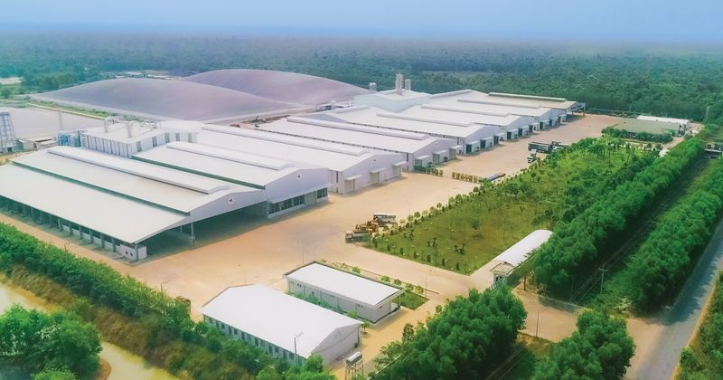
1.001 chuyện cây sắn và ethanol: Đến thủ phủ của sắn 🔗 MOI
Bản hợp đồng 5 tỉ USD Xuất thân từ một gia đình có duyên nợ với cây sắn , bởi thân phụ từng là phó giám đốc nhà máy bột mì màu Tây Ninh từ cuối thập niên 60 của thế kỷ 20, nên ông Lê Hữu Hùng, Phó chủ
Cụm trưởng tình báo H63 và nỗi đau về những đồng đội nằm xuống trong Tết Mậu Thân 1968 🔗 MOI
Tại hội thảo tìm kiếm, xác minh vị trí hố chôn tập thể các chiến sĩ hy sinh trong cuộc Tổng tiến công và nổi dậy Xuân Mậu Thân 1968 diễn ra mới đây, Đại tá Nguyễn Văn Tàu (bí danh Tư Cang) - nguyên Cụ
Bác sĩ chỉ cách nhận biết dấu hiệu sớm ung thư vòm họng 🔗 MOI
PGS.TS.BS Phạm Cẩm Phương, Giám đốc Trung tâm Y học hạt nhân và Ung bướu, Bệnh viện Bạch Mai, ung thư vòm họng là một trong những bệnh ung thư thường gặp tại Việt Nam. Bệnh thường tiến triển âm thầm,
Hôm nay 11.6 là ngày gì mà nhiều người quan tâm? 🔗 MOI
Dương lịch hôm nay là thứ năm, đánh dấu năm 2026 trải qua ngày thứ 160. Theo lịch âm hôm nay 11.6 là ngày 26 tháng 4, theo cách gọi can chi là ngày Bính Thìn, tháng Quý Tỵ, năm Bính Ngọ. Lịch âm hôm n
Đề xuất loạt siêu dự án ở Lâm Đồng 🔗 MOI
Liên tục trong những ngày qua, lãnh đạo tỉnh Lâm Đồng đã có nhiều buổi làm việc với các tập đoàn lớn để lắng nghe, trao đổi về việc đầu tư dự án, tháo gỡ khó khăn vướng mắc các dự án đang triển khai t
Nhảy việc để có thêm thời gian nghỉ cuối tuần 🔗 MOI
Sau ba năm làm quản lý mảng kinh doanh - bán hàng tại một công ty bất động sản ở Hà Nội, chị Khánh Ly, 39 tuổi, quyết định nghỉ việc. Chị chấp nhận giảm thu nhập, tìm doanh nghiệp có chế độ nghỉ hai n

Google Finance tích hợp AI: Người dùng phổ thông cũng có thể đầu tư như chuyên gia 🔗 MOI
Nhà đầu tư nghiệp dư vẫn có thể hiểu thị trường nhờ công cụ AI mới của Google. Google đang thử nghiệm phiên bản Google Finance tích hợp trí tuệ nhân tạo (AI) tại Israel, đánh dấu bước đi mới trong tha

Chỉ đạo, quyết định của Chính phủ - Thủ tướng Chính phủ 🔗 MOI
10/06/2026 (Chinhphu.vn) - Văn phòng Chính phủ vừa có Thông cáo báo chí chỉ đạo, điều hành của Chính phủ, Thủ tướng Chính phủ ngày 10/6/2026. 10/06/2026 (Chinhphu.vn) - Chính phủ ban hành Nghị định số
Ronaldo 2 lần đối mặt thủ môn vẫn bất lực, Bồ Đào Nha thắng nhọc Nigeria 🔗 MOI
Tiền đạo 41 tuổi được giữ lại trên sân lâu hơn hầu hết đồng đội để tìm kiếm bàn thắng thứ 144 cho tuyển Bồ Đào Nha. Tuy nhiên, trong buổi tổng duyệt tại Leiria (Bồ Đào Nha), chủ nhân 5 Quả bóng Vàng l
Vì sao một người trẻ có thể nhìn cụ già bán nốt chiếc nhẫn cuối cùng mà vẫn tìm mọi cách ký được hợp đồng? 🔗 MOI
TIN MỚI Ảnh nạn nhân được trích từ phóng sự của VTV "Dây chuyền tôi mua cho bà ấy một cây vàng. Đồng tiền vàng con gái từ Pháp gửi về. Tôi còn chiếc nhẫn hơn 3 chỉ được ông thông gia tặng.
WHO kêu gọi phối hợp khống chế dịch Ebola 🔗 MOI
Tổng Giám đốc WHO Tedros Adhanom Ghebreyesus đánh giá cao phản ứng nhanh của Uganda, nhất là sàng lọc tại cửa khẩu , giám sát dịch tễ, xét nghiệm, quản lý ca bệnh, cũng như cách tiếp cận phối hợp liên
Tin tức đặc biệt trên báo in Thanh Niên 11.6.2026 🔗 MOI
Giá vàng lao dốc không phanh Giá vàng liên tiếp sập mạnh khiến người mua với giá nào từ đầu năm đến nay cũng đều thua lỗ nặng nề. Mua đầu ngày, cuối ngày lỗ hơn 10 triệu đồng/lượng. Giá vàng liên tục
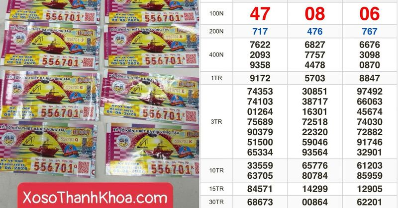
Cùng nhau mua vé số, 9 người ở Tây Ninh trúng độc đắc 24 tỉ xổ số miền Nam 🔗 MOI
Đại lý vé số Thanh Khoa ở Tây Ninh cho biết đã đổi thưởng cho 9 khách có vé số trúng độc đắc. Theo đó, 12 tờ có dãy số 556701 thuộc đài Vũng Tàu mở thưởng xổ số miền Nam ngày 9 tháng 6 trúng độc đắc t
Bắt giám đốc, phó giám đốc 2 công ty trang sức có tiếng ở TPHCM 🔗 MOI
Ngày 11-6, Cơ quan Cảnh sát điều tra Công an tỉnh Thanh Hóa cho biết, đã triệt phá đường dây chế tác, tiêu thụ hơn 10.000 sản phẩm trang sức giả các thương hiệu nổi tiếng thế giới, bắt giữ nhiều đối t

Tử vi ngày 11 tháng 6: Con giáp nào may mắn hôm nay? 🔗 MOI
Tuổi Tí trong tử vi ngày 11 tháng 6 có thể nhận được một thông tin hoặc lời đề nghị khiến bạn phải cân nhắc kỹ. Hôm nay không phải ngày để quyết định vội vàng. Dành thêm thời gian quan sát sẽ giúp bạn
Đua sản xuất thuốc trong không gian 🔗 MOI
Trên chuyến bay gần đây của hãng SpaceX (Mỹ) có một kiện hàng đặc biệt: một thiết bị công nghệ cao được đưa lên Trạm Vũ trụ quốc tế (ISS) để nuôi cấy các tinh thể protein siêu tinh khiết nhằm phục vụ
Ăn sáng với món nước hay món khô sẽ tốt hơn cho sức khỏe? 🔗 MOI
Các món như cháo, súp, phở hay bún chứa nhiều nước nên thức ăn mềm hơn ngay từ khi vào dạ dày. Nhờ vậy, hệ tiêu hóa không phải mất quá nhiều công sức để nghiền và xử lý thức ăn. Đây là lý do nhiều ngư
Quản trị tài sản số: Khi tên miền không chỉ là địa chỉ truy cập 🔗 MOI
(KTSG) - Trong bối cảnh nền kinh tế số bùng nổ, tên miền (domain name) đã thoát ly khỏi vai trò kỹ thuật thuần túy để trở thành một công cụ nhận diện nguồn gốc thương mại cốt lõi. Tuy nhiên, sự xung đ
Hậu trường Sơn Tùng quay MV 'Come My Way' giữa Los Angeles 🔗 MOI
Ở hậu trường quay MV, ca sĩ cho biết một trong những phân cảnh anh tâm đắc là khi xuất hiện trên chim Lạc giữa trung tâm Downtown Los Angeles. Trước đó, bộ phận mỹ thuật gia công đạo cụ bằng nhiều chấ
Báo in ngày 11-6: Tin nhắn sau buổi thi 🔗 MOI
Ngoài ra, báo in Người Lao Động số ra ngày 11-6 còn nhiều bài viết đặc sắc khác dành cho bạn đọc, gồm: ĐỊNH HÌNH ĐỘNG LỰC TĂNG TRƯỞNG MỚI CHO ASEAN (Trang 2) ASEAN hướng tới động lực tăng trưởng mới d

Chủ xe hybrid sạc điện bị chỉ trích 'không sạch' vì lười cắm điện, Toyota cho thấy điều ngược lại 🔗 MOI
Hóa ra chủ xe PHEV không lười cắm sạc, mà phụ thuộc vào việc họ sống ở đâu và sở hữu xe dưới hình thức nào - Ảnh: Toyota Trong nhiều năm qua, xe hybrid sạc điện (PHEV) thường bị hoài nghi về hiệu quả

Công cụ AI liên quan Anthropic tự ý xóa sạch dữ liệu của một doanh nghiệp trong 9 giây 🔗 MOI
Hành động phá hoại của công cụ lập trình AI đã khiến khách hàng của Công ty PocketOS rơi vào tình thế khó khăn - Ảnh TED HSU Báo Guardian đưa tin một công cụ lập trình vận hành bằng trí tuệ nhân tạo (
Năng lượng & Khoáng sản 🔗 MOI
Trong số 96 dự án thu hút đầu tư năm 2026, có 21 dự án thuộc lĩnh vực năng lượng, 20 dự án về nhà ở, khu công nghiệp, 15 dự án hạ tầng khu, cụm công nghiệp...
Chân dung doanh nghiệp 🔗 MOI
Không chỉ đánh dấu sự xuất hiện của ông Trịnh Văn Quyết, ĐHĐCĐ của FLC còn gây chú ý với kế hoạch đưa cổ phiếu trở lại giao dịch, tái cấu trúc.

🔗 MOI
Từ 5h30 sáng, Trần Quang Vinh, học sinh lớp 12D2, Trường THPT Cầu Giấy, đã có mặt tại điểm thi Trường THCS Trần Duy Hưng (Hà Nội). Nam sinh cho biết hôm qua em đi cùng mẹ đến làm thủ tục nhưng mất khá
Hơn 1,2 triệu sĩ tử thi tốt nghiệp: Hồi hộp với đề Văn 🔗 MOI
11/06/2026 07:28 report Nghệ An Sáng 11/6, hơn 42.000 thí sinh Nghệ An chính thức bước vào ngày thi đầu tiên, Kỳ thi tốt nghiệp THPT năm 2026. Ghi nhận tại điểm thi Trường THPT Thái Hòa, ngay từ sáng
Điểm đến ở Việt Nam khiến khách Tây ở 7 tháng vì thấy 'hạnh phúc mỗi ngày' 🔗 MOI
Phải lòng điểm đến có cảnh đẹp, đồ ăn ngon "Khi vừa đặt chân tới Việt Nam, tôi đã thấy nơi đây có nhiều điều thú vị hơn các điểm đến tôi từng ghé qua. Tôi yêu thích bầu không khí tích cực, nhịp sống h
Nhiều phương án bảo đảm an ninh, an toàn cho kỳ thi tốt nghiệp THPT 🔗 MOI
Điểm mới đáng chú ý trong kỳ thi năm nay tại Bắc Ninh là lực lượng chức năng sử dụng máy quét cầm tay để hỗ trợ kiểm soát người và vật dụng của TS trước khi vào khu vực thi tại một số điểm thi được đá
Chấn chỉnh tour tuyến, bè du lịch tự phát ở quần đảo Nam Du, Hòn Sơn 🔗 MOI
Khách du lịch tham quan Hòn Sơn (đặc khu Kiên Hải, tỉnh An Giang) - Ảnh: CHÍ CÔNG Chiều 10-6, ông Châu Hùng Kỳ - Chủ tịch UBND đặc khu Kiên Hải - cho biết đặc khu này vừa có văn bản chấn chỉnh các hạn

Coi chừng nhiễm liên cầu lợn vì thói quen ăn tiết canh, thịt tái 🔗 MOI

Làm thế nào để lên thực đơn dinh dưỡng cho gia đình nhiều thế hệ? 🔗 MOI

Khám tiền hôn nhân ở nam và nữ khác nhau như thế nào? 🔗 MOI

Sử dụng thuốc tăng cường sinh lý để kéo dài 'cuộc yêu', có nên không? 🔗 MOI

Chồng không tinh trùng nhưng vợ vẫn sinh được con 'chính chủ', vì sao? 🔗 MOI

Viêm da tiết bã ở trẻ em khác gì ở người lớn? 🔗 MOI

Xóa xăm có xóa được triệt để hay không? 🔗 MOI

6 dấu hiệu thầm lặng cảnh báo đột quỵ trước 1 tháng 🔗 MOI
Theo The Times of India, 6 dấu hiệu của cơ thể cảnh báo trước 1 tháng khi đột quỵ sắp xảy ra: 1. Chóng mặt bất thường Cảm giác chóng mặt thường được cho là do bỏ bữa, mất nước hoặc đứng dậy quá nhanh.
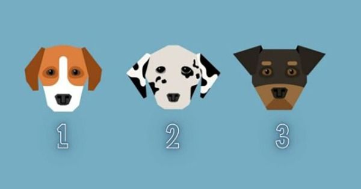
🔗 MOI
Hãy chọn một chú chó trong hình thu hút bạn nhất để khám phá bạn có phải là người luôn giữ thái độ ôn hòa không. - Chó 1 Chó 1 Nếu chọn chú chó số 1, điều đó cho thấy bạn là người ôn hòa và luôn hướng

Hệ thống Bảo hiểm xã hội Việt Nam: Tăng tốc thực hiện các chỉ tiêu nhiệm vụ năm 2025 🔗 MOI
Theo Bảo hiểm xã hội (BHXH) TP. Hồ Chí Minh, mặc dù năm 2025 gặp một số khó khăn, tuy nhiên tập thể cán bộ viên chức, người lao động BHXH TP. Hồ Chí Minh quyết tâm hoàn thành vượt chỉ tiêu giao, với s
Dự đoán tỉ số World Cup: Son Heung Min rực sáng giúp Hàn Quốc thắng Czech 🔗 MOI
Son Heung Min hứa hẹn sẽ tỏa sáng trận ra quân cho tuyển Hàn Quốc - Ảnh: REUTERS Hàn Quốc và Czech mới chỉ có 1 lần chạm trán trong quá khứ, với chiến thắng 2-1 nghiêng về đại diện châu Á vào năm 2016
Thay vì kiện vi phạm bản quyền, Trung Đinh cho phép in lại áo dài để bán giá phổ thông 🔗 MOI
Nhà thiết kế Trung Đinh cho phép in một số mẫu áo dài bán giá phổ thông - Ảnh: NVCC Nhà thiết kế - nghệ nhân Trung Đinh gây chú ý khi anh công bố cho phép các xưởng in trên toàn quốc sử dụng và in lại
Thí sinh cả nước bước vào môn thi đầu tiên của kỳ thi tốt nghiệp THPT 2026 🔗 MOI
Thí sinh có mặt tại điểm thi THPT chuyên Lê Hồng Phong sáng 11-6 - Ảnh: DUYÊN PHAN Đây cũng là môn thi luôn nhận được sự quan tâm đặc biệt từ thí sinh, giáo viên và phụ huynh mỗi mùa thi tốt nghiệp bở
Thời tiết hôm nay 11-6: Nhiều nơi mưa to chiều tối 🔗 MOI
Hôm nay 11-6, thời tiết nhiều nơi có mưa to vào chiều tối - Ảnh: NAM TRẦN Trung tâm Dự báo khí tượng thủy văn quốc gia cho biết hôm nay 11-6, thời tiết Bắc Bộ mưa rào và dông vài nơi. Rêng khu vực Tây
Phiên livestream kéo dài 15 giờ tiếp sức chiến binh hoa mặt trời 🔗 MOI
Thông tin mega livestream Tiếp sức hoa mặt trời ngày 14-6 và những dấu ấn tiêu biểu của chương trình Ước mơ của Thúy do báo Tuổi Trẻ thực hiện "Mỗi đơn hàng - Thắp một hy vọng" là thông điệp xuyên s

Nhật Bản ra mắt 'máy giặt người' trị giá 385.000 USD, làm sạch từ đầu đến chân trong 15 phút 🔗 MOI
Thống đốc Yoshimura Yoshifumi của tỉnh Osaka trải nghiệm máy giặt người Mirai - Ảnh: SISA COMMUNICATION YOUTUBE Theo trang Interesting Engineer ngày 30-11, Công ty Science Inc. của Nhật Bản vừa chính

Microsoft tung 7 mô hình AI mới, tham vọng giảm phụ thuộc OpenAI 🔗 MOI
Build 2026 đánh dấu bước tiến mới trong chiến lược AI của Microsoft - Ảnh: PHAN HẢI ĐĂNG Trong nhiều năm qua, Microsoft được biết đến là đối tác chiến lược quan trọng nhất của OpenAI, đồng thời là đơn
AEON Mall kinh doanh rất tốt ở Việt Nam 🔗 MOI
Một trung tâm thương mại của Aeon Mall ở Huế - Ảnh: DNCC AEON kinh doanh ra sao ở Việt Nam? Báo cáo tài chính năm tài khóa 2024 (từ tháng 3-2024 đến hết tháng 2-2025), bộ số liệu mới nhất được AEON Ma

Hoàn thiện khung khổ pháp lý về tiết kiệm 🔗 MOI
Pháp luật Trong công cuộc phòng, chống lãng phí hiện nay khó có thể tránh khỏi những khó khăn, nguy hiểm, ảnh hưởng tới người đấu tranh chống lãng phí. Do đó, việc bảo vệ người cung cấp thông tin phát

Cải cách tài chính công thúc đẩy tăng trưởng 🔗 MOI
Pháp luật Trong những năm qua, cùng với việc đẩy mạnh tiến trình xây dựng Nhà nước pháp quyền Việt Nam xã hội chủ nghĩa, công tác xây dựng và hoàn thiện hệ thống pháp luật đã đạt được nhiều thành tựu

Chính phủ với công dân 🔗 MOI
11/06/2026 (Chinhphu.vn) - Thí sinh Nguyễn Trung Anh tốt nghiệp THPT năm 2024 và năm nay muốn xét tuyển đại học theo phương thức xét học bạ. Do gia đình khó... 10/06/2026 (Chinhphu.vn) - Bà Nguyễn Thị
bảng giá truyền thông 🔗 MOI

Thông cáo báo chí 🔗 MOI
Thông cáo báo chí 09/06/2026 (Chinhphu.vn) - Văn phòng Chính phủ vừa có Thông cáo báo chí chỉ đạo, điều hành của Chính phủ, Thủ tướng Chính phủ ngày 9/6/2026. 08/06/2026 (Chinhphu.vn) - Văn phòng Chín

Tham vấn chính sách 🔗 MOI
10/06/2026 (Chinhphu.vn) - Bộ Y tế đang lấy ý kiến đối với dự thảo Thông tư quy định về tổ chức hoạt động Ban quân dân y các cấp và cơ sở khám bệnh, chữa bệnh... 09/06/2026 (Chinhphu.vn) - Bộ Tài chín
Tín hiệu may mắn: Ma Kết sắp đón "trái ngọt", Song Tử chủ động kết nối 🔗 MOI
Song Tử: Vận may gõ cửa, cơ hội xuất hiện từ các mối quan hệ Đây cũng là thời điểm thuận lợi để Song Tử mở rộng các mối quan hệ nghề nghiệp. Những người đang tìm việc, chuyển việc hoặc phát triển dự á
Diện mạo mới của bóng đá châu Á 🔗 MOI
“Nếu đồng lòng, chúng tôi sẽ vô địch” Lần đầu tiên có một đội bóng châu Á dám đặt mục tiêu vô địch World Cup dù không có lợi thế chủ nhà. Thế giới sẽ xem đây là lời nói đùa. Nhưng giờ đây, sẽ không có
'Phía bên kia thành phố' tập 10: Cương giả ốm nặng để làm hoà với Khuê 🔗 MOI
Trong Phía bên kia thành phố tập 10 lên sóng tối nay, 11/6, Cương (Võ Hoài Vũ) diễn màn kịch bị ốm nặng và sắp đi xa để lấy sự thương cảm của Khuê (Thái Vũ) mà nhận sự tha thứ của cậu bạn thân. Khuê c
🔗 MOI
Mất việc làm có thể tước đi vị trí trong bảng lương, nhưng nó không thể tước đi giá trị con người và khả năng tái sinh mạnh mẽ trong một thế giới VUCA. Làn sóng ngầm phía sau những quyết định "tinh gọ
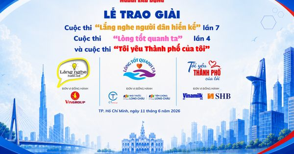
Sáng nay 11-6, Báo Người Lao Động trao giải 3 cuộc thi lớn 🔗 MOI
Hôm nay (11-6), Báo Người Lao Động long trọng tổ chức Lễ trao giải 3 cuộc thi: "Lắng nghe người dân hiến kế" lần 7, "Lòng tốt quanh ta" lần 4 và "Tôi yêu thành phố của tôi". Tháng 9-2025, Báo Người La
Báo SGGP trao tiền bạn đọc hỗ trợ hoàn cảnh khó khăn 🔗 MOI
Chiều 10-6, đại diện Báo SGGP tại khu vực Tây Nguyên - Nam Trung bộ phối hợp với UBND phường Xuân Hương - Đà Lạt (tỉnh Lâm Đồng) thăm hỏi, trao số tiền 21 triệu đồng bạn đọc hỗ trợ cho cháu Lý Thị Mộn
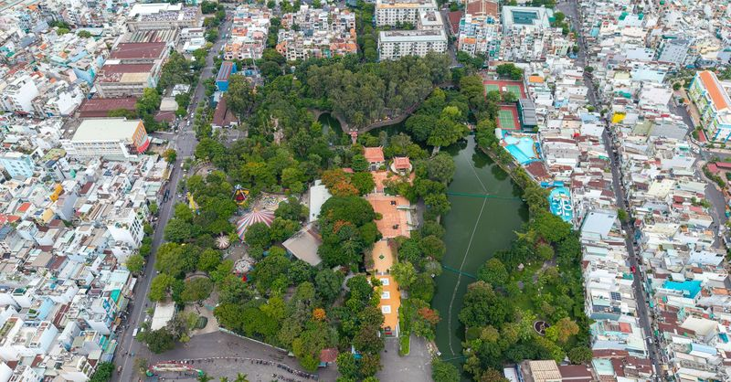
Toàn cảnh công viên Lê Thị Riêng - nơi đang xác minh có khu mộ tập thể 900 liệt sĩ 🔗 MOI
Công viên Lê Thị Riêng rộng khoảng 8ha, nằm giữa các tuyến đường Cách Mạng Tháng Tám, Bắc Hải và Trường Sơn, là một trong những không gian xanh lớn ở khu vực trung tâm TPHCM. Một phần nghĩa trang Đô T
Trên 1,2 triệu thí sinh làm bài thi môn Ngữ văn 🔗 MOI
Thí sinh tại điểm thi Trường THCS Trưng Vương, phường Cửa Nam, Hà Nội. Ảnh: VIẾT CHUNG Sáng 11-6, thí sinh bước vào ngày thi đầu tiên của kỳ thi tốt nghiệp THPT năm 2026 với môn Ngữ văn, thời gian làm
MU đổi kế hoạch, sẵn sàng chiêu mộ ngôi sao giá 100 triệu bảng Anh 🔗 MOI
(PLO)- MU đảo chiều kế hoạch chuyển nhượng khi thương vụ trị giá 100 triệu bảng Anh được Sir Jim Ratcliffe "bật đèn xanh". MU đang chuẩn bị cho một kỳ chuyển nhượng mùa hè sôi động với việc đảo chiều
Tiếc cho ca sĩ Sơn Tùng M-TP, Tóc Tiên 🔗 MOI
"Bão" truyền thông Những ngày qua, mạng xã hội rầm rộ tranh cãi liên quan 2 sản phẩm âm nhạc nổi bật nhất đầu hè 2026 là MV Come my way của ca sĩ Sơn Tùng M-TP và MV Người còn thương em không? của ca
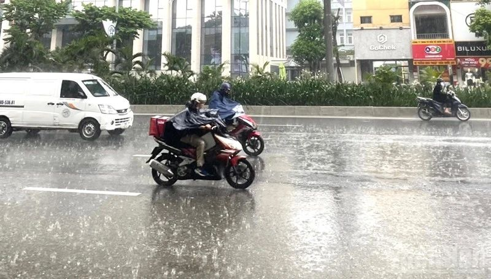
Thời tiết ngày 11/6: Nhiều nơi trên cả nước có mưa rào và dông 🔗 MOI
Theo Trung tâm Dự báo khí tượng thủy văn quốc gia, khu vực Hà Nội có mây, ngày nắng, chiều tối và đêm có mưa rào và dông vài nơi. Thành phố Hồ Chí Minh có mưa rào và dông vài nơi; riêng chiều tối và t
Bảo vệ Tổ quốc từ sớm, từ xa trên không gian mạng 🔗 MOI
Hiện nay, không gian mạng được coi là môi trường tác chiến thứ năm. Bảo vệ Tổ quốc từ sớm, từ xa trên không gian mạng là một nhiệm vụ cấp bách bảo đảm chủ quyền quốc gia trong tình hình mới. Theo Trun
Nợ học phí, chưa lấy được bằng, có ảnh hưởng xét tuyển đại học? 🔗 MOI
Về vấn đề này, Bộ Giáo dục và Đào tạo trả lời như sau: Khi tạo tài khoản đăng ký nguyện vọng với tư cách thí sinh tự do đã tốt nghiệp, Điểm tiếp nhận hồ sơ chỉ căn cứ trên minh chứng hợp pháp xác nhận
Hoạt động di cư qua Đại Tây Dương tăng trở lại 🔗 MOI
Theo thông báo, chỉ trong vòng 10 ngày, lực lượng bảo vệ bờ biển Mauritania giải cứu 1.076 người di cư trên biển. Các tàu gỗ chở người di cư phần lớn xuất phát từ các quốc gia Tây Phi, như Senegal và
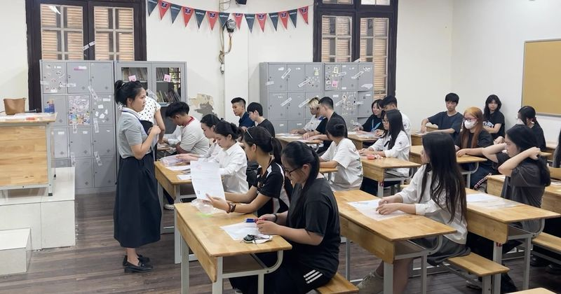
[Video] Bộ Giáo dục và Đào tạo: Đề thi tốt nghiệp THPT 2026 bảo đảm cân bằng giữa các môn 🔗 MOI
Bộ trưởng Giáo dục và Đào tạo Hoàng Minh Sơn cho biết đề thi tốt nghiệp THPT năm 2026 được xây dựng trên cơ sở yêu cầu cần đạt của Chương trình giáo dục phổ thông 2018, bảo đảm tính chính xác, rõ ràng
Hứa hẹn sẽ là kỳ giải của những bất ngờ 🔗 MOI
Lần đầu trong lịch sử 1 kỳ World Cup được mở rộng về quy mô, lên tới 48 đội tuyển quốc gia tham dự, tăng thêm 16 đội so với kỳ giải trước cách đây 4 năm, chia thành 12 bảng đấu, mỗi bảng có bốn đội. T
Bắt đầu thi tốt nghiệp THPT: Lãnh đạo TPHCM đến điểm thi động viên thí sinh 🔗 MOI
Từ 6 giờ 30, thí sinh đã tập trung tại các điểm thi để sẵn sàng cho kỳ thi quy mô lớn nhất từ trước tới nay. Trong kỳ thi tốt nghiệp THPT năm nay, cả nước có khoảng 2.500 điểm thi, gần 50.000 phòng th
Báo Pháp Luật TP. Hồ Chí Minh 🔗 MOI
Ninh Bình - Thể Công Viettel: Đi tìm danh hiệu đầu tiên (18 giờ, ngày 11-6) 🔗 MOI
Geovane giữa vòng vây của các hậu vệ TC Viettel trong lần đối đầu tại V-League 2025-2026. Ảnh: VPF Không chỉ riêng Ninh Bình mà cả đội khách Thể Công Viettel cũng tiếc hùi hụi khi không đuổi bắt kịp C
Ngày hội của người yêu pickleball 🔗 MOI
Giải Pickleball Báo Người Lao Động năm 2026 hứa hẹn mang đến bầu không khí sôi động và những cuộc tranh tài hấp dẫn khi quy tụ đông đảo vận động viên là nghệ sĩ, người nổi tiếng, tay vợt phong trào gi
Dự báo thời tiết 11/6/2026: Nhiều nơi mưa rào, Trung Bộ có điểm nắng nóng 🔗 MOI
Theo Trung tâm Dự báo khí tượng thủy văn quốc gia, ngày 11/6, hơn 1,22 triệu thí sinh cả nước bước vào ngày thi đầu tiên của kỳ thi tốt nghiệp THPT năm 2026. Thời tiết các khu vực trên cả nước nhìn ch
Thời tiết ngày 11/6: Mưa dông diện rộng, có thể xảy ra lốc sét và mưa đá 🔗 MOI
Facebook Twitter Lưu bài viết Bản in Copy link Theo Trung tâm Dự báo Khí tượng Thủy văn Quốc gia, ngày và đêm 11/6, nhiều khu vực trên cả nước xuất hiện mưa rào và dông, cục bộ có nơi mưa to trên 60-8
Bảo vệ thủy sản nuôi mùa nắng nóng 🔗 MOI
Các chuyên gia Tổ chức Lương thực và Nông nghiệp Liên hợp quốc (FAO) và Tổ chức Khí tượng thế giới (WMO) nhận định, nguồn cung lương thực tại nhiều khu vực trên thế giới đang bị “đẩy đến bờ vực” cạn k
Bang Texas điều tra FIFA về cách bán vé World Cup 🔗 MOI
Tổng chưởng lý bang Texas Ken Paxton ngày 9/6 thông báo mở cuộc điều tra nhằm vào Liên đoàn Bóng đá Quốc tế (FIFA), cho rằng tổ chức này đã gây hiểu lầm cho người hâm mộ về vị trí và chất lượng chỗ ng
Đường đến World Cup 2026 của Bồ Đào Nha: Tất cả vì Ronaldo 🔗 MOI
Hồ sơ đội tuyển Bồ Đào Nha Tiêu chí Thông tin chi tiết Vị trí trên BXH FIFA 5 Liên đoàn trực thuộc UEFA (Châu Âu) HLV trưởng Roberto Martínez Đội trưởng Cristiano Ronaldo Số lần dự World Cup 9 lần Thà
Ngôi làng toàn siêu xe, tỷ phú 🔗 MOI
Cách thủ đô gần 320 km về phía bắc, Alderley Edge có chưa tới 5.000 dân. Nơi đây được mệnh danh là "Knightsbridge của phương Bắc" - ví với khu phố mua sắm sầm uất tại London. Tại đây, người ta thường
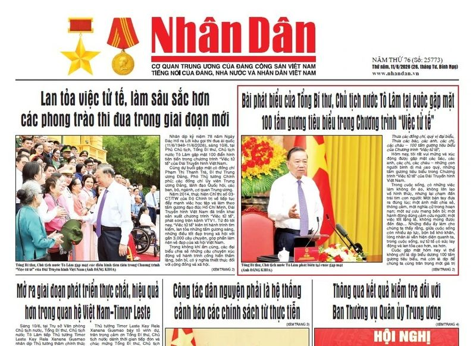
Báo Nhân Dân số 25773 🔗 MOI
Luật Đô thị đặc biệt: Phân quyền triệt để cho TP.HCM bứt phá mạnh mẽ 🔗 MOI
D ự thảo Luật Đô thị đặc biệt được kỳ vọng sẽ tạo ra bước ngoặt về thể chế, mang lại bệ phóng phát triển mạnh mẽ cho TP.HCM. Điểm sáng lớn nhất của dự thảo lần này là việc nhấn mạnh nguyên tắc phân qu
Công tác dân nguyện phải là hệ thống cảnh báo các chính sách từ thực tiễn 🔗 MOI
Theo Chủ tịch Quốc hội, công tác dân nguyện không thể chỉ dừng lại ở việc tiếp dân, xử lý đơn thư hay chuyển kiến nghị đến các cơ quan có thẩm quyền. “Quan trọng hơn, đây phải là kênh cảm nhận sớm tâm
Nhận định bảng J World Cup 2026: Viết tiếp lịch sử 🔗 MOI
Tổng quan bảng J World Cup 2026 Bốn năm trước tại Qatar, Argentina đã chinh phục đỉnh cao thế giới bằng chiến thắng nghẹt thở trước tuyển Pháp trên chấm luân lưu trong trận chung kết để giành chức vô
Công an xã Bình Chánh kiểm tra cư trú, test ma túy xuyên ngày đêm 🔗 MOI
LTS: Thực hiện mệnh lệnh quyết liệt từ Ban Giám đốc Công an TP.HCM, toàn lực lượng công an thành phố đang đồng loạt ra quân thực hiện chiến dịch quy mô lớn: Cao điểm 45 ngày đêm tổng rà soát, đấu tran
🔗 MOI
Phụ huynh, sĩ tử lưu ý mưa dông 🔗 MOI
Hôm nay, ngày đầu tiên của kỳ thi tốt nghiệp THPT, khu vực phía Đông Bắc Bộ ngày nắng, đêm có mưa rào và dông vài nơi. Gió nhẹ. Nhiệt độ thấp nhất 24-27 độ, vùng núi có nơi dưới 23 độ.
Loại quả quen thuộc trong bữa ăn có thể giảm mỡ máu 🔗 MOI
Cholesterol là một chất béo được cơ thể sản xuất tự nhiên và cần thiết cho nhiều chức năng sinh lý. Tuy nhiên, khi nồng độ cholesterol trong máu tăng quá cao, chất này có thể tích tụ trong thành mạch,
[Video] Quảng Trị quy tập 4 hài cốt liệt sĩ tại khu vực thi công bệnh viện 🔗 MOI
Qua quá trình tìm kiếm, lực lượng chức năng đã phát hiện và quy tập được 4 hài cốt liệt sĩ ở độ sâu khoảng 2m. Cùng với các hài cốt, nhiều di vật được tìm thấy gồm tăng võng, tất bộ đội, lược, hộp tiế
[Video] Dự báo thời tiết ngày 11/6/2026: Bắc Bộ có nắng trở lại, Trung Bộ tiếp diễn mưa dông cục bộ 🔗 MOI
Tại Bắc Bộ, thời tiết hôm nay phổ biến khô ráo, mưa dông chỉ xuất hiện cục bộ ở một vài nơi. Riêng khu vực vùng núi Bắc Bộ, do ảnh hưởng của điều kiện hội tụ ẩm, về chiều tối và đêm vẫn có khả năng xu
Trường Giang, Nhã Phương thu hoạch rau trái vườn nhà 🔗 MOI
Cặp sao dẫn các con về nhà vườn tại Hồ Tràm (thuộc Bà Rịa - Vũng Tàu cũ, nay là TP HCM) dịp hè. Họ đặt tên cho không gian sống là Destiny theo nickname của con gái đầu lòng, được xây dựng vào năm 2019
Israel tăng cường không kích Liban khiến 13 người thiệt mạng 🔗 MOI
Facebook Twitter Lưu bài viết Bản in Copy link Ngày 10/6, hãng thông tấn nhà nước Liban NNA đưa tin các cuộc không kích của Israel ở miền Nam nước này trong 24 giờ qua đã khiến ít nhất 13 người thiệt
LiveBắt đầu kỳ thi tốt nghiệp THPT có số lượng thí sinh đông nhất trước nay 🔗 MOI
Với số lượng khoảng 1,22 triệu thí sinh đăng ký dự thi, kỳ thi tốt nghiệp THPT năm 2026 ghi nhận số lượng thí sinh đông nhất từ trước tới nay, tăng 61.600 thí sinh so với năm trước. Cả nước có 2.487
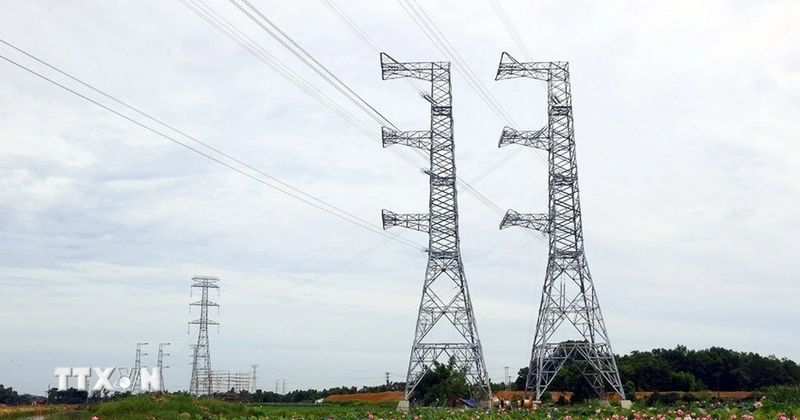
Phát huy truyền thống thi đua yêu nước trong kỷ nguyên phát triển mới 🔗 MOI
Facebook Twitter Lưu bài viết Bản in Copy link Cách đây 78 năm, Chủ tịch Hồ Chí Minh ra Lời kêu gọi thi đua ái quốc, đặt nền móng cho phong trào thi đua yêu nước của cách mạng Việt Nam. Từ đó đến nay,
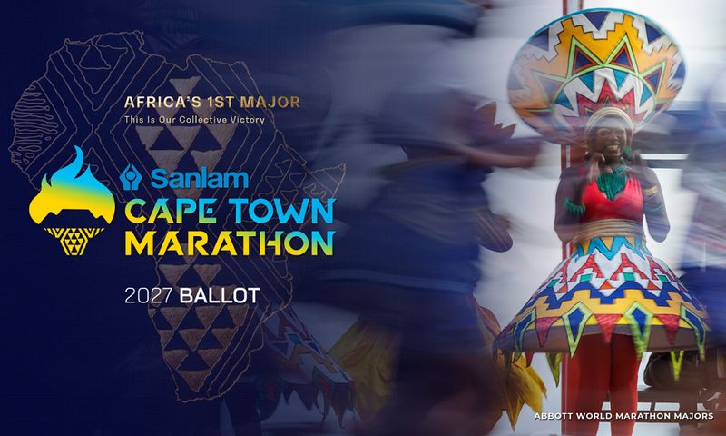
Cape Town Marathon trở thành giải major thứ tám 🔗 MOI
Sau khi được đưa vào danh sách ứng viên từ năm 2021, giải đấu tại Nam Phi đã vượt qua vòng đánh giá cuối cùng vào năm 2026, qua đó trở thành giải major đầu tiên được tổ chức trên lục địa châu Phi. Cap

Kết quả bóng đá hôm nay 11/6: Bồ Đào Nha thắng nhọc 🔗 MOI
Kết quả bóng đá hôm nay NGÀY GIỜ TRẬN ĐẤU TRỰC TIẾP GIAO HỮU CÁC ĐTQG 2026 11/06 02:45 Bồ Đào Nha 2-1 Nigeria 11/06 03:00 Anh - Costa Rica CÚP QG PHẦN LAN 2025/26 – TỨ KẾT 10/06 21:00 KuPS 0-0 Vaasa V
El Nino có thể đạt cường độ mạnh nhất trong hơn 100 năm 🔗 MOI
Facebook Twitter Lưu bài viết Bản in Copy link Các nhà dự báo khí tượng cảnh báo một hiện tượng El Nino mạnh có thể đang hình thành tại Thái Bình Dương, với khả năng trở thành một trong những sự kiện
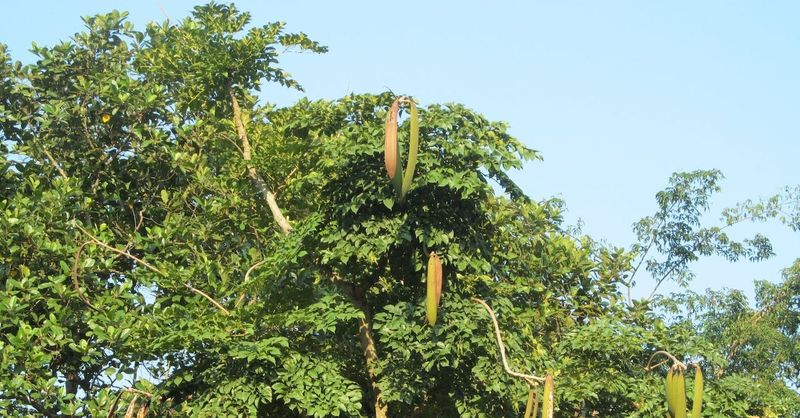
Đặc sản Tây Bắc là vị thuốc quý trị dị ứng, viêm da 🔗 MOI
Cây núc nác (còn gọi là quao, hoàng bá nam, mộc hồ điệp...) có tên khoa học là Oroxylum indicum, thuộc họ chùm ớt (Bignoniaceae). Đây là loài cây thân gỗ quen thuộc tại các vùng nông thôn và trung du
Sáng nay 11-6, hơn 1,2 triệu thí sinh cả nước thi môn ngữ văn cần lưu ý gì? 🔗 MOI
Buổi sáng thi môn ngữ văn (120 phút); giờ phát đề cho thí sinh 7 giờ 30 phút; giờ bắt đầu làm bài 7 giờ 35 phút. Thí sinh làm thủ tục dự thi tốt nghiệp THPT tại TPHCM. Ảnh: Hoàng Triều Buổi chiều, thí
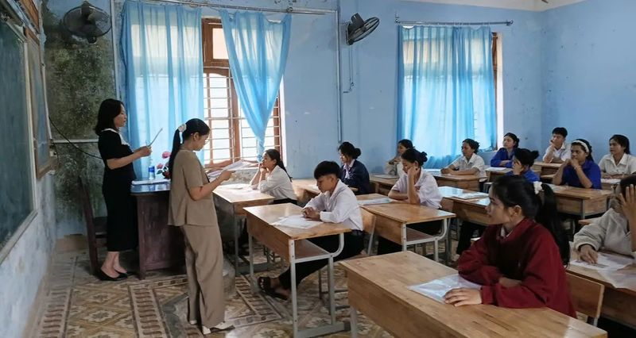
Sĩ tử sẵn sàng vượt “vũ môn” 🔗 MOI
Học sinh đảo Thạnh An vào đất liền dự thi Trong ngày làm thủ tục dự thi, tại TPHCM, hơn 142.000 thí sinh đã có mặt tại 246 điểm thi để kiểm tra thông tin trên giấy báo dự thi và sinh hoạt quy chế thi.
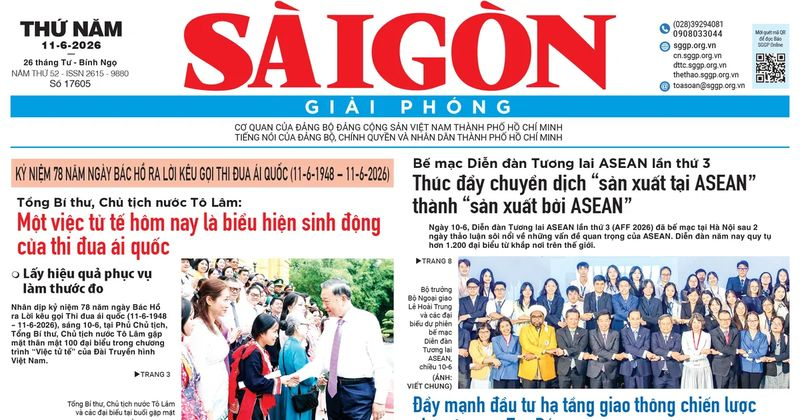
Báo Sài Gòn Giải Phóng ngày 11/6/2026 🔗 MOI
Bảo vệ môi trường và thích ứng với biến đổi khí hậu là một trong những trụ cột của mô hình phát triển mới 🔗 MOI
Cùng dự có các đồng chí Ủy viên Bộ Chính trị: Nguyễn Thanh Nghị, Bí thư Trung ương Đảng, Trưởng ban Chính sách, chiến lược Trung ương; Phạm Gia Túc, Phó Thủ tướng Thường trực Chính phủ; các đồng chí Ủ
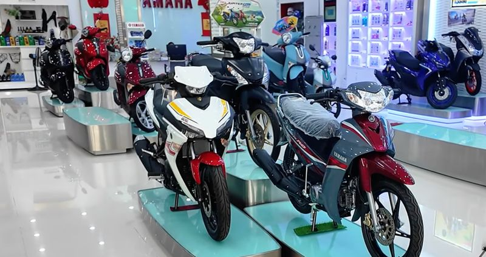
Sức mua giảm, nhiều mẫu xe máy 'hot' vẫn bán chênh giá hàng triệu đồng 🔗 MOI
Trong bối cảnh thị trường xe máy đang dần hạ nhiệt, sức mua không còn sôi động như những năm trước và nguồn cung nhìn chung đã ổn định hơn, tình trạng đại lý bán xe cao hơn giá đề xuất của nhà sản xuấ
Hơn 1,2 triệu thí sinh bắt đầu thi tốt nghiệp THPT năm 2026 🔗 MOI
Tuyệt đối không chủ quan! Theo ông Huỳnh Văn Chương, Cục trưởng Cục Quản lý chất lượng (Bộ GD-ĐT), kỳ thi năm nay có 1.223.776 thí sinh đăng ký dự thi (tăng 61.642 thí sinh so với năm trước). Cả nước
Thi tốt nghiệp THPT 2026: Đảm bảo cân bằng đề thi giữa các môn 🔗 MOI
Trao đổi với PV Thanh Niên về chỉ đạo trong khâu ra đề thi tốt nghiệp THPT năm nay, Bộ trưởng Bộ GD-ĐT Hoàng Minh Sơn khẳng định đề thi giữa các môn sẽ bảo đảm độ cân bằng nhằm tạo công bằng giữa các
Hơn 50.000 ca sốt xuất huyết trong 5 tháng, dịch diễn biến khó lường 🔗 MOI
Bệnh sốt xuất huyết Dengue đang có những diễn biến khó lường. Trong 5 tháng đầu năm 2026, cả nước ghi nhận hơn 50.000 ca mắc, tăng 2,5 lần so với cùng kỳ năm trước, số ca nặng phải nhập viện cũng gia
V-League và những gam màu đối lập: Muốn mạnh phải bền 🔗 MOI
V-League 2025-2026 khép lại với một kết quả đáng chú ý: Công an Hà Nội (CAHN) vô địch, Thể Công - Viettel về nhì, Ninh Bình đứng thứ ba và CLB Hà Nội xếp thứ tư. Bốn vị trí đầu bảng đều thuộc về các đ
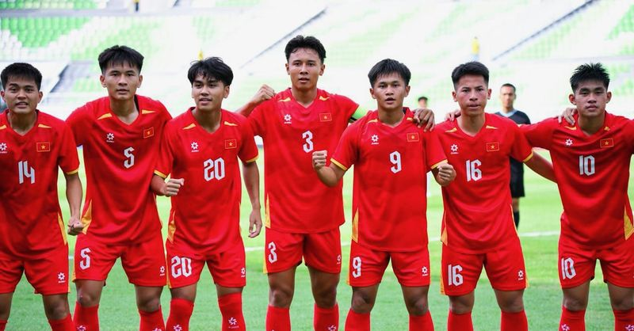
U19 Việt Nam: Đừng bi kịch hóa một thất bại 🔗 MOI
Thất bại đáng tiếc Trước khi bước vào lượt trận cuối vòng bảng, U19 Việt Nam nắm trong tay lợi thế không nhỏ. Chỉ cần một kết quả hòa trước U19 Indonesia, thầy trò HLV Yutaka Ikeuchi giành quyền vào b
Thời trang blokecore gây sốt trước thềm World Cup 🔗 MOI
Theo Guardian , blokecore đang là xu hướng được nhiều người áp dụng nhất kể trước thềm World Cup - giải bóng đá lớn nhất hành tinh. Blokecore là từ ghép của bloke - chỉ những người mê bóng đá ở Anh, A
Lựa chọn khó của các ứng viên vô địch 🔗 MOI
Phép thử chọn người đá chính Ở đội tuyển Anh, HLV Thomas Tuchel đứng trước 2 phương án cho vị trí tiền vệ tấn công chủ lực phía sau Harry Kane là Jude Bellingham và Morgan Rogers. Ngôi sao của Real Ma
Luật đô thị đặc biệt: Mở rộng không gian liên kết phát triển 🔗 MOI
Sáng 10-6, UBND TPHCM tổ chức hội nghị lấy ý kiến góp ý của các tỉnh, thành miền Đông Nam Bộ và đồng bằng sông Cửu Long (ĐBSCL) về dự thảo Dự án Luật Đô thị đặc biệt. Sự kiện do ông Nguyễn Mạnh Cường
Định hình động lực tăng trưởng mới cho ASEAN 🔗 MOI
Ngày 10-6, Diễn đàn Tương lai ASEAN 2026 (AFF 2026) tiếp tục với phiên thảo luận chuyên đề "An ninh năng lượng trong bối cảnh mới". Giải bài toán an ninh năng lượng Mở đầu phiên thảo luận, bà Seema Ma
'Kẻ bị ghét nhất Internet' gieo ác mộng cho hàng nghìn phụ nữ 🔗 MOI
Bỏ học năm 13 tuổi, Hunter Moore bắt đầu kinh doanh trên Internet, phát triển chatbot cho phần mềm nhắn tin trực tuyến OL Instant Messenger và tự học cách chỉnh sửa ảnh. Moore cho biết hai sự kiện thờ

Google ra mắt Gemma 4, AI chạy offline trên thiết bị cá nhân 🔗 MOI
Gemma 4 chạy trực tiếp trên thiết bị cá nhân - Ảnh: THOMAS FULLER Trong bối cảnh trí tuệ nhân tạo vẫn phụ thuộc vào hạ tầng đám mây, việc một mô hình có thể hoạt động trực tiếp trên thiết bị cá nhân đ
Hôm nay (11-6) Bắt đầu thi tốt nghiệp THPT: Thí sinh được tạo điều kiện tốt nhất 🔗 MOI
Theo thống kê của Bộ Giáo dục và Đào tạo (GD-ĐT), tổng số thí sinh đăng ký dự thi kỳ thi tốt nghiệp THPT năm 2026 là 1.223.776 em; trên cả nước có 2.478 điểm thi với tổng số 54.409 phòng thi. Hoàn tất
Uống thuốc cường dương ảnh hưởng thế nào đến sinh lý? 🔗 MOI
Trả lời: Nam giới ở độ tuổi 26 tuổi thì đang trong giai đoạn hoạt động tình dục mạnh mẽ, các chức năng của cơ thể trong giai đoạn "sung mãn". Do đó, bạn không nên lạm dụng các loại thuốc cường dương đ
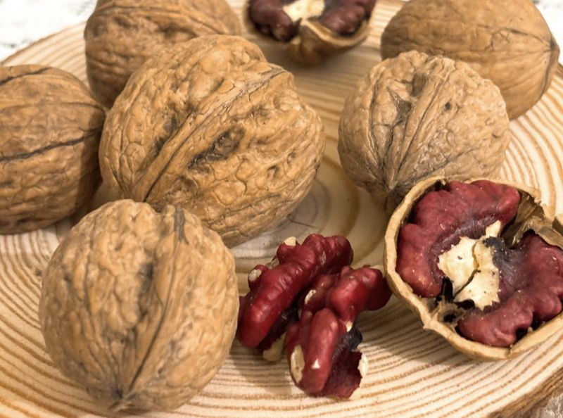
5 thực phẩm dùng thường xuyên giúp tim, thận khỏe 🔗 MOI
Tim và thận là hai cơ quan có mối liên hệ chặt chẽ. Khi tim hoạt động kém hiệu quả, lượng máu đến thận có thể giảm, ảnh hưởng đến chức năng lọc chất thải. Ngược lại, tổn thương thận cũng làm tăng nguy
MU thông báo chấm dứt hợp đồng 6 cầu thủ 🔗 MOI
Casemiro khép lại quãng thời gian bốn năm khoác áo Quỷ đỏ, sau khi gia nhập từ Real Madrid với mức phí 70 triệu bảng năm 2022. Trong màu áo MU , tiền vệ người Brazil ra sân 160 trận, ghi 26 bàn thắng
'Nhấc bút lên trong đêm cô đơn' viết nhật ký chữa lành 🔗 MOI
Ấn phẩm được xuất bản tại Nhật năm 2013, là lần đầu Fumitake Koga viết cho độc giả từ khoảng 13 tuổi. Tuy nhiên, sách không chỉ phù hợp bạn đọc thiếu niên. Trong một cuộc phỏng vấn, tác giả nói muốn d
HLV Bồ Đào Nha: 'Ronaldo như mới 18 tuổi' 🔗 MOI
Trong cuộc phỏng vấn với Athletic trước thềm World Cup 2026, HLV Roberto Martinez coi Ronaldo là nhân tố giúp Bồ Đào Nha duy trì vị thế ở các giải đấu lớn suốt hơn hai thập kỷ qua. "Ronaldo là một cầu
Có phải cứ bật nhạc sẽ phải trả tiền bản quyền? 🔗 MOI
Xin hỏi cụ thể quy định này ra sao? Quán của tôi kinh doanh nhỏ lẻ, chỉ khoảng 40 m2, khách cũng ít thì có phải trả tiền bản quyền nhạc không? Nếu phải trả thì trả bao nhiêu, dựa trên doanh thu, diện
Gần 860 ha rừng tại U Minh Hạ suy thoái, suy kiệt chưa rõ nguyên nhân 🔗 MOI
Ngày 10.6, lãnh đạo Vườn quốc gia U Minh Hạ (xã Đá Bạc, tỉnh Cà Mau) cho biết đơn vị đã có báo cáo gửi Thường trực Tỉnh ủy, UBND tỉnh Cà Mau cùng các cơ quan chức năng về thực trạng diện tích rừng bị
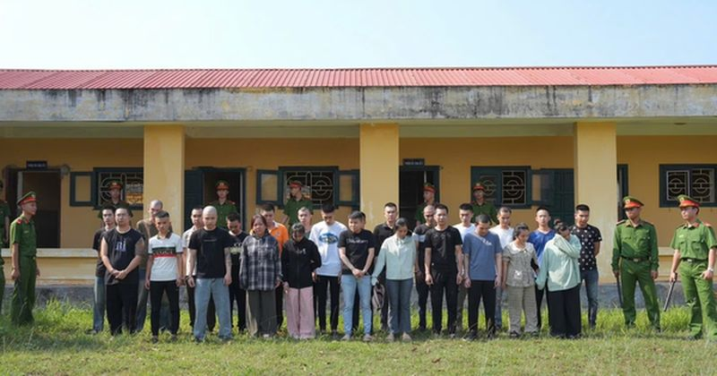
Đánh sập đường dây "bẫy tình" lừa hàng ngàn phụ nữ hơn 3.000 tỉ đồng 🔗 MOI
TIN MỚI Các nghi phạm trong đường dây lừa đảo xuyên quốc gia bằng hình thức "bẫy tình" bị cơ quan công an bắt giữ để điều tra. Ngày 10-6, Công an tỉnh Quảng Trị cho biết vừa triệt phá đường dây lừa đả

CMC OpenAI phát triển mô hình AI pháp lý tiếng Việt 🔗 MOI
Bộ chuẩn đánh giá VLegal - Bench của nhóm nghiên cứu C-OpenAI đăng ký trên cổng arXiv của Trường đại học Cornell - Mỹ phiên bản mới nhất cập nhật ngày 25-12-2025. CMC OpenAI , công t

Vì sao càng dùng điện thoại, bạn càng khó ngủ? 🔗 MOI
Ánh sáng xanh từ điện thoại khiến não bộ “tỉnh táo giả” vào ban đêm Mỗi tối, hàng triệu người cầm điện thoại lên giường với suy nghĩ chỉ lướt vài phút trước khi ngủ. Nhưng thực tế, chính ánh sáng phát
Câu chuyện thương trường 🔗 MOI
Các dự án tập trung vào các lĩnh vực công nghiệp, hạ tầng, xử lý rác thải, thiết bị y tế, vật tư sản xuất nông nghiệp, may mặc, thương mại, dịch vụ tổng hợp, chế biến nông sản.
Nghiên cứu thị trường 🔗 MOI
9 tháng đầu năm 2025, CPI tăng 3,27%, lạm phát cơ bản tăng 3,19%, Cục Thống kê đánh giá lạm phát 'đang trong tầm kiểm soát'.
Khi nào xóa 'án treo' cho xe bán tải? 🔗 MOI
(KTSG) - Từ đầu năm đến nay xe bán tải - dòng xe chủ lực trong vận chuyển hàng hóa nhỏ gọn trong đô thị - liên tiếp chịu cảnh “lên bờ xuống ruộng” do các quy định thay đổi. Mới đây, hy vọng xóa thân p

Người tạm trú tại TP.HCM có được khám sức khỏe định kỳ miễn phí? 🔗 MOI
Người dân phường Trung Mỹ Tây (TP.HCM) khám sức khỏe tại trạm y tế phường - Ảnh: XUÂN MAI Ngày 31-5, Sở Y tế TP.HCM thông tin thêm một số nội dung người dân cần biết về chương trình khám sức khỏe định

Trung Quốc chế tạo máy phát hiện ung thư cầm tay: Chỉ cần 1 giọt máu, chính xác tới 94,9% 🔗 MOI
Thiết bị tầm soát cầm tay có thể phát hiện sớm dấu hiệu ung thư có độ chính xác đến 95% chỉ bằng một giọt máu được phát triển bởi các nhà khoa học Trung Quốc - Ảnh: Chụp màn hình Theo báo SCMP ngày 25

Bổ nhiệm hai Phó giám đốc Đại học Cần Thơ 🔗 MOI
Giáo sư, tiến sĩ Trần Ngọc Hải được bổ nhiệm Phó giám đốc Đại học Cần Thơ - Ảnh: ĐHCT Các quyết định bổ nhiệm ký ngày 2-6 và có thời hạn 5 năm. Trước đó, GS.TS Trần Ngọc Hải và TS Lê Văn Lâm là Phó hi

Hoàng Hên, Duy Mạnh khuấy động ngày khai màn Giải bóng rổ chuyên nghiệp Việt Nam 2026 🔗 MOI
Đỗ Hoàng Hên được fan xin giao lưu - Ảnh: BTC Tối 21-5, tại Nhà thi đấu Xuân Đỉnh (Hà Nội) đã diễn ra lễ khai mạc VBA 2026 . Mùa giải thứ 11 của Giải bóng rổ chuyên nghiệp Việt Nam khởi đầu hấp dẫn bằ

Thuốc lá điện tử lách luật, quảng cáo là 'khói thơm', 'không độc hại' để đánh lừa giới trẻ? 🔗 MOI
Một bạn trẻ khoe hút thuốc lá điện tử trên mạng - Ảnh: VŨ TUẤN (chụp lại) "Vạch trần sự hấp dẫn giả tạo - Hành động để đẩy lùi nạn nghiện nicotine và thuốc lá" là khẩu hiệu của Tổ chức Y tế thế giới đ

Cách loại bỏ phần trả lời AI khỏi kết quả tìm kiếm Google 🔗 MOI
AI Overviews dược đặt ưu tiên trước các kết quả tìm kiếm truyền thống Hiện nay kết quả tìm kiếm trên Google thường bắt đầu bằng một đoạn tóm tắt do AI tạo ra trước khi người dùng nhìn thấy danh sách w

Code do AI viết nhanh hơn, nhưng lỗi nhiều gấp 1,7 lần con người 🔗 MOI
AI chuyển hóa từ ý tưởng sang sourcecode nhanh nhưng chưa tinh Nghiên cứu mới nhất từ CodeRabbit (một công cụ đánh giá mã nguồn phổ biến) chỉ ra rằng mã nguồn do AI tạo ra có tỉ lệ lỗi cao gấp 1,7 lần

ChatGPT cũng 'khoe' Wrapped, nhìn lại một năm bạn dùng AI 🔗 MOI
Cùng ChatGPT nhìn lại 1 năm đồng hành với tính năng Your Year with ChatGPT - Ảnh: OpenAI OpenAI vừa giới thiệu tính năng tổng kết năm cho người dùng ChatGPT , mang tên chính thức là 'Your Year

Chinh phục những vì sao - Kỳ 10: Tìm câu trả lời loài người có cô đơn trong vũ trụ 🔗 MOI
Phi hành gia Eugene Cernan của Apollo 17 chụp cùng lá cờ Mỹ trên Mặt trăng năm 1972 - Ảnh: NASA Đặc biệt, trong thập niên 1960, hai siêu cường Liên Xô và Mỹ đã liên tục phóng tàu vũ trụ không người lá
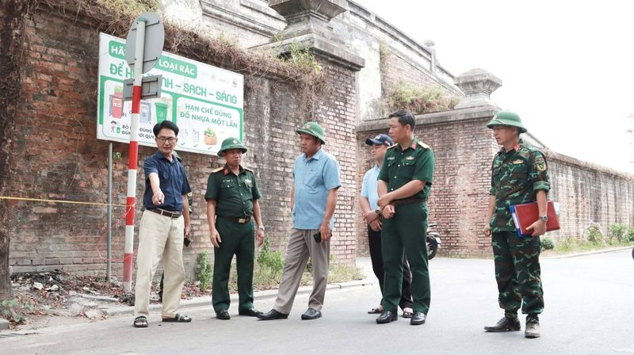
Huế xác minh thông tin hố bom chôn cất 15 liệt sĩ 🔗 MOI
Ngày 10/6, ông Nguyễn Văn Mạnh, Phó chủ tịch TP Huế, cùng đoàn công tác của Bộ Chỉ huy quân sự thành phố đã gặp ông Lê Văn Lượt, 70 tuổi, ở phường Phú Xuân để thu thập thêm thông tin và khảo sát thực
World Cup 2026 được dự báo phát thải kỷ lục 🔗 MOI
World Cup 2026 khởi tranh từ ngày 11/6, mở đầu cuộc đua của những pha ghi bàn kịch tính cùng làn sóng hâm mộ toàn cầu. Tuy nhiên, lượng phát thải môi trường của mùa giải năm nay không hề nhỏ. Theo nền
Nghi vấn về động cơ kiếm tiền từ bộ ảnh Viking của tuyển Na Uy 🔗 MOI
Trong loạt ảnh do LĐBĐ Na Uy (NFF) thực hiện, Erling Haaland và các đồng đội được trang bị khiên, cung tên, rìu và đứng cạnh những chiếc thuyền dài đặc trưng của người Viking . Ý tưởng nhằm tạo dấu ấn
Roy Keane: 'Tôi hoàn toàn không thấy cửa vô địch của tuyển Anh' 🔗 MOI
Trên chương trình The Overlap , Keane cho rằng việc vượt qua vòng bảng - với Croatia, Ghana, Panama - sẽ không phải thách thức lớn với "Tam sư", nhưng hành trình tiến sâu tại World Cup 2026 là câu chu
Nhà khoa học đề xuất 'xây tường' chắn bão mặt trời 🔗 MOI
Theo Space , nhóm nghiên cứu dẫn đầu là phó giáo sư Brian Walsh ở Đại học Boston, bang Massachusetts đề xuất một giải pháp táo bạo mang tên StormWall để tăng cường độ kiên cố cho từ quyển, lá chắn tự
Lịch thi đấu Cúp quốc gia hôm nay: Ninh Bình đại chiến Thể Công Viettel, Nam Định quyết thắng CLB CA TP.HCM 🔗 MOI
Cúp quốc gia cạnh tranh khốc liệt như V-League Chung kết Cúp quốc gia mùa trước là trận chiến "một chiều", khi CLB Công an Hà Nội (CLB CAHN) thắng dễ 5-0 trước SLNA để lên ngôi vô địch. Tuy nhiên, mùa

Siri có thể tích hợp ChatGPT, Gemini trên iOS 27 🔗 MOI
Người dùng có thể sớm được tự do lựa chọn "bộ não" AI cho Siri ngay trên giao diện iOS 27 Apple đang thử nghiệm một thay đổi đáng chú ý với Siri, khi cân nhắc cho phép tích hợp các mô hình AI bên ngoà

Những điểm check-in ở Nha Trang 'nổi rần rần trên mạng' 🔗 MOI
Bờ kè xóm Chụt đặc biệt thu hút giới trẻ đến check-in trong thời gian gần đây - Ảnh: TRẦN HOÀI Bên cạnh những điểm đến, các khu du lịch vốn đã nổi tiếng, nhiều điểm check-in miễn phí hoặc với chi phí

Lạc vào làng cổ Lộc Yên, nơi có cổng ngõ, bờ rào bằng đá trăm năm tuổi xếp chồng độc đáo 🔗 MOI
Lối vào của một ngôi nhà cổ ở Lộc Yên, ngõ đá, bờ rào cổ kính - Ảnh: LÊ TRUNG Làng cổ Lộc Yên, xã Thạnh Bình, TP Đà Nẵng (trước đây thuộc xã Tiên Cảnh, huyện Tiên Phước , Quảng Nam) được công nhận là
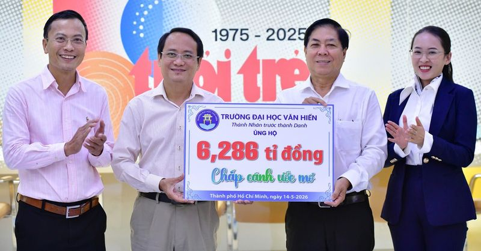
Mời bạn đọc giới thiệu học sinh, sinh viên nhận học bổng Chắp cánh ước mơ 2026 🔗 MOI
Ông Nguyễn Hoàng Nguyên (thứ hai từ bên trái) - Phó tổng biên tập báo Tuổi Trẻ và PGS.TS Trần Huy Hoàng - Phó hiệu trưởng thường trực Trường đại học Văn Hiến (thứ 2 từ bên phải) - trao tượng trưng tổn
Việt Nam thất thế trong cuộc đua đến siêu giải bóng chuyền 🔗 MOI
Tuyển bóng chuyền nữ Việt Nam bỏ lỡ thời cơ bứt phá trên bảng xếp hạng thế giới - Ảnh: FIVB Ở lượt trận thứ 3 bảng B AVC Cup, tuyển bóng chuyền nữ Việt Nam thắng sít sao Indonesia với tỉ số 3-2. Dù là

Indonesia siết quản lý Roblox, buộc xác minh độ tuổi bằng khuôn mặt 🔗 MOI
Trẻ dưới 16 tuổi chơi Roblox ở Indonesia phải quét khuôn mặt xác minh độ tuổi - Ảnh: REUTERS Bà Nicky Jackson Colaco - Phó chủ tịch kiêm Giám đốc chính sách công toàn cầu của Roblox - cho biết công ty

Tuyên án tù chung thân đối với Đào Minh Quân về tội khủng bố, hoạt động nhằm lật đổ chính quyền 🔗 MOI
Tuyên án tù chung thân đối với Đào Minh Quân về tội khủng bố, hoạt động nhằm lật đổ chính quyền nhân dân - Ảnh: TTXVN Bị cáo Đào Minh Quân - đối tượng cầm đầu tổ chức "Chính phủ quốc gia Việt Nam lâm

Xã miền núi thu 46 tỉ từ YouTube, TikTok, Facebook 🔗 MOI
Phiên chợ số bán sản phẩm địa phương ở Lâm Bình - Ảnh: CÔNG ĐẠI Ngày 2-5, lãnh đạo UBND xã Lâm Bình (tỉnh Tuyên Quang) cho biết UBND xã vừa công bố đề án xây dựng thí điểm "Làng sáng tạo nội dung số g

Người trẻ rối loạn cương dương tăng 🔗 MOI
Bác sĩ Bệnh viện Nhân dân Gia Định (TP.HCM) tư vấn và thăm khám sức khỏe cho bệnh nhân tại phòng khám nam khoa - Ảnh: MINH TOÀN Đáng lo hơn, không ít thanh niên trẻ âm thầm chịu đựng, tự tìm thông tin

Thói quen dụi mắt tưởng vô hại nhưng có thể phá hỏng thị lực 🔗 MOI
Dụi mắt tiềm ẩn nhiều nguy cơ đối với sức khỏe thị giác - Ảnh: PACKANDBIANESVISION Cảm giác ngứa ngáy hay khó chịu ở mắt thường khiến nhiều người vô thức đưa tay lên dụi, song hành động này có thể làm

50 triệu đồng cho giáo viên IELTS sáng tạo nội dung số 🔗 MOI
Hội đồng Anh lần đầu phát động cuộc thi tìm giáo viên IELTS sáng tạo nội dung số - Ảnh: BC Hội đồng Anh Việt Nam vừa phát động IELTS EduCreators 2026, giải thưởng dành cho giáo viên và người giảng dạy

Hơn 1.000 người ở TP.HCM tham dự chương trình phòng, chống đuối nước 🔗 MOI
Phó giám đốc Sở Văn hóa - Thể thao TP.HCM Trần Thị Thu Hiền (thứ tư từ phải sang) tại lễ phát động - Ảnh: PHÚC LÊ Sáng 23-5, chương trình phát động toàn dân tập luyện môn bơi, phòng, chốn

HLV Philippe Troussier: U22 Việt Nam có sức ép 🔗 MOI
Tiền vệ Công Đến (giữa) trên sân tập tại Campuchia chiều 26-4 - Ảnh: N.K. "Chúng tôi có sức ép về mục tiêu tại SEA Games . Chúng tôi có sức ép phải chơi thứ bóng đá tốt nhất của mình.

Xem video siêu phẩm từ giữa sân của Chanathip vào lưới Công An Hà Nội 🔗 MOI
Video Chanathip lập siêu phẩm vào lưới Công An Hà Nội - Nguồn: FPT Play Ở trận đấu này, CLB Công An Hà Nội đã sớm có bàn thắng dẫn trước ở phút 20 nhờ công của Alan. Sau đó, đại diện bóng đá Việt Nam

Mùng 3 Tết, Lễ hội xuân Cần Giờ tại Vinhomes Green Paradise đông vui vượt mong đợi 🔗 MOI
Gian hàng ông đồ thu hút nhiều người đến xin chữ đầu năm - Ảnh: VĨNH SƯƠNG Chị Hằng, một cư dân sống ở Cần Giờ (TP.HCM) nhiều năm, chia sẻ chị không nghĩ Lễ hội xuân Cần Giờ lại đông vui đến vậy. “Lễ